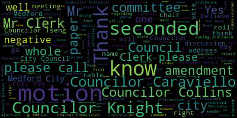
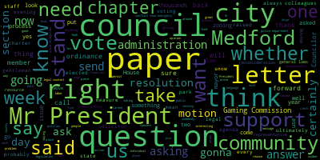
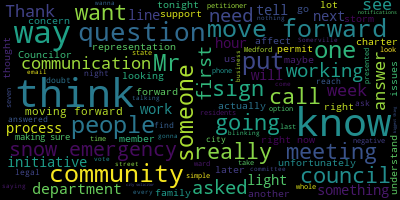
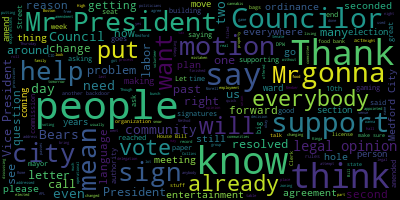
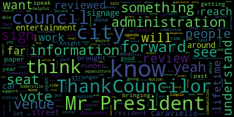
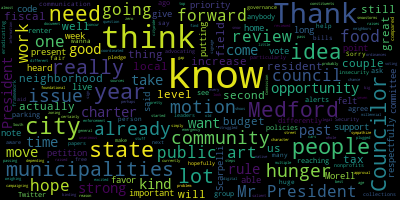
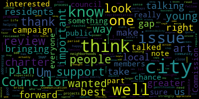
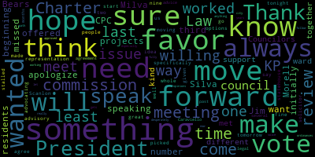

[Bears]: Six regular meeting February 2022 is now called the order, Mr. Clerk, please call the role.
[Hurtubise]: Council curvy Council calls present Council night present Councilor Kelly. Councilor Tseng President, President Morell, President, President Bears President seven presidents are absent please rise to salute the flag.
[SPEAKER_05]: I pledge allegiance to the flag of the United States of America and to the republic for which it stands, one nation, under God, indivisible, with liberty and justice for all.
[Bears]: Hearings 22-037, City of Medford, notice of a public hearing. The Medford City Council will hold a continued public hearing in the Howard F. Alden Chambers at Medford City Hall, 85 George P. Hassett Drive, Medford, and via Zoom on Tuesday, February 8th, 2022 at 7 p.m. on a petition from Orville Anabazi of OBE's Auto Service to operate an automotive repair and auto body shop class four license at 38 Harvard Avenue, Medford MA 02155 in a commercial one zoning district. A Zoom link for this meeting will be posted no later than February 4th, 2022. Petition and plan may be seen in the office of the City Clerk, Medford City Hall, Medford, Massachusetts. Call 781-393-2425 for any accommodations and aids. TDD 781-393-2516. The City of Medford is an equal opportunity employer. By order of the Medford City Council, Adam Hurtubise, City Clerk. Do I see Mr. Abbasi? Is it here in person? Wonderful. I believe where we left this off was there was a question as to whether this was an allowed use under the special permit. And I believe Councilor Knight has had some communications with city staff regarding that. Councilor Knight. I think you believe wrong. I believe wrong.
[SPEAKER_19]: All right. Mr. President.
[Knight]: Anytime that a motion's been made on the floor, communication with the city staff should come directly to the council until the individual constantly constantly made the motion right so ultimately, last week I raised the question as to whether or not this is a use that would have to go to our community development boards outline the chapter 94 of our zoning act. And I asked the question as to whether or not this is one of those uses because the paper before us didn't say what the use was that we were voting on. So the question would then come from this council to the administration. The administration would assign it to a council, to a staff member. The staff member would report back to this council via the administration. I haven't received any correspondence or communication relative to this subject matter. I don't know if my colleagues have or if the clerk has.
[Bears]: Mr. Clerk, have you received any correspondence regarding this matter?
[Hurtubise]: I have not received written correspondence, but I did hear from the solicitor who said that the building commissioner said it will
[Knight]: Right, the question was whether or not it wasn't whether it wasn't allowed to use because a special permit right, it was allowed to use special permits before us the question was whether or not to go to the CD board before the council voted on it pursuant to 94. 9481B of the Zoning Act.
[Bears]: All right. Well, in that case, Chair of Licensing, do you have a recommendation?
[Scarpelli]: Oh Chair, still in doubt. I think that, you know, is the legal representation, is Ms. Scanlon on or? Mr. Mulkey on tonight? Because unfortunately I hate to hold our petition up again, but it is a valid question that we needed answered for tonight's meeting. I believe we actually put in the resolution that it was date determined. It was, you know, we were pretty strict about that. So we're under the assumption that would the chief of staff know any way to, you know, find a way to contact either the city solicitor or Mr. Mulkey to get on the call later on this evening so we don't have to do another night and just table this for later on in the meeting.
[Bears]: I'm comfortable with that. Is that a motion?
[Scarpelli]: If we can.
[Bears]: They're not on, they're not on right now. The chief of staff isn't on either? I do not see, well the chief of staff isn't on either.
[Scarpelli]: If we can. I'm in total. Is there a way to reach out to the city solicitor to see if they can answer that question or?
[Nazarian]: I'm happy to. One of them is available to join the meeting this evening.
[Scarpelli]: I'll do that right now. I hate to waste the petitioners another week. And I know that it's a question that's a legitimate question that we need before we move forward.
[Nazarian]: I'm genuinely not familiar with the details of the topic, but again, I'm happy to reach out.
[Scarpelli]: We can, thank you.
[Bears]: On the motion of Councilor Schaffer at the table.
[Scarpelli]: At the table until we get communication. So if you could just ask the petitioner.
[Bears]: What? To continue public hearing, yes. The motion to continue the public hearing.
[Scarpelli]: All right, just so the petitioner knows, we're just waiting for what we're asking for from the legal department to let us know that we're taking the proper course so that doesn't affect you moving forward. So we're just waiting for someone if they can call us before the end of the meeting tonight, okay? All right.
[Bears]: All right, so the motion of Councilor Scarpelli to continue the public hearing. We may take this up again at this meeting. Seconded by Councilor Collins. Mr. Clerk, please call the roll.
[Hurtubise]: Councilor Caraviello? Yes. Councilor Collins? Yes. Councilor Knight? Yes. Councilor Scarpelli? Yes. Councilor Tseng?
[Bears]: Yes.
[Hurtubise]: President Morell? Yes. Vice President Bears.
[Bears]: Yes, 70 permits to the negative. The hearing is continued. 22-063 offered by Council night. It's a result of the Medford City Council extended steep and sincere consult condolences to the family of Frank Palmisano on his recent past Councilor Knight.
[Knight]: Mr. President, thank you very much. Although I did not know Mr. Palmisano. Well, he was a neighbor of mine grew up around the corner from him. And he was always a gentleman that was well respected in the neighborhood. If he's anything like his son Carmen, then we know that he's a great man. His son Carmen and I have become friends over the years. Carmen carries himself as such a gentleman that it's only fitting to say it's a reflection of his father. And recently the city of Medford lost Mr. Parmesano, and I'd like to ask my council colleagues to join me in extending our deep and sincere condolences to the family of a lifelong Metro resident.
[Bears]: Thank you, Councilor Knight. If you don't mind if you could move the microphone a little closer to your mouth, we're having some issues hearing you with the air. Councilor Scarpelli.
[Scarpelli]: Thank you, Councilor Knight, for bringing this forward. I honestly, I thought that if he doesn't mind me adding my name to this resolution, I thought I did. I'm very close friends, graduated with the sun common. and friends with his daughter, Fran. Mr. Palmisano was bigger than life. He was that type of life of the party that worked for years for the Duck Tours and was a legend there. Always a person to make other people laugh and make other people feel comfortable. Another member of our community that had a battle of devastating illness and unfortunately, passed on that with the major suffering. And it's something that, you know, you wish you could take away, but I know that he's not in pain anymore and he's in a better place. And for his family, you know, Method residents who grew up and loved our community and, you know, raised by his wonderful parents. their wonderful parents and Mr. Parmigiano was definitely the anchor of that family. So some of that will be missed. So I condolences to the Parmigiano family.
[Bears]: Thank you, councilor Scarpelli.
[Caraviello]: Councilor Caraviello. Thank you, Mr. President. Though I didn't know Mr. Parmigiano personally, I am very friendly with the family and I've heard the stories and legendary tales of his years on the duck boats and the many friends he's made over this. So again, condolences to the family of Mr. Palmazano.
[Bears]: Thank you, Councilor Caraviello. Any further comments from the council or members of the public? Mr. Castagnetti, name and address for the record, please. It isn't quite yet. There you go.
[Castagnetti]: Thank you, Council President. I'm out of breath, having a hard time breathing with this mask. It's the most addictive drug in the world, nicotine. Did you know that one gram of nicotine would kill an elephant? True story. I wish it never started. Good evening, city councilors. First off, congratulations on your re-election to the new, all you councilors who are re-elected and to the new two councilors. Also, I must thank the others who ran for office and caring for Method's future. Thank you all. I'm sorry Frank Palmisano was gone. I first met him at the Old Method High School in 1965. After school, we used to go walk one block to Joe's pool room on the corner of High Street and Forest down the cellar with 10 pool tables. I guess we were practicing our geometry, mathematics, as we'd be shot many, many pool balls. And sometimes we all talked about how we could avoid being drafted into that lousy Vietnam War conflict. For you see, in the 60s, we teenagers had real issues to protest and worry about. The regime war in Vietnam, or was it a conflict? And the draft. Enough about history. I simply want to say, frankly, Frankie was a good boy and a man of good, good character. He'll be missed by many. Thank you, Councilor Knight, for bringing this forward and letting me know about this. And thank you all for listening.
[Bears]: Peace. Thank you, Mr. Castagnetti. On the motion of Councilor Knight and Councilor Scarpelli, seconded by Councilor Caraviello. Mr. Clerk, please call the roll.
[Hurtubise]: Councilor Caraviello. Yes. Yes. Yes. Yes. Yes. Yes. Yes. Yes.
[Bears]: Suspension of the rules to take paper 22 dash 073 communications for the mayor by Councilor carb yellow seconded by seconded by Councilor Collins, Mr. Clark, please call the roll.
[Hurtubise]: Yes. Yes. Yes. Yes. vice president bears.
[Bears]: Yeah, yes 70 affirmative zero and the negative. We've taken paper 22 dash 073 which I'll now read 22 dash 073 February 4 2022 by electronic delivery to the Honorable President and members of the Medford City Council City Hall Medford Massachusetts 02155. Regarding Home Rule Petition Charter Commission, dear President Morell and members of the City Council, I respectfully request and recommend that your Honorable Body approve the following Home Rule Petition and transmit to the General Court for their consideration. Thank you for your kind attention to this matter. Sincerely, Breanna Lungo-Koehn, Mayor. The Home Rule Petition is the following, an act authorizing the election of a Charter Commission in the City of Medford. being enacted by the Senate and House of Representatives and general court assembled and by the authority of the same as follows. Section one, notwithstanding the provisions of chapter 43B of the general laws or any provisions of any general law, special law or regulation to the contrary, the city of Medford City Council shall at the first regular city election or earlier occurring special election held on or after the 60th day following the effective date of this act by order provided for the election of a nine member charter commission. Section two, the charter commission shall be composed of one commissioner elected from each of the eight wards of the city and one elected at large. In the event a charter commissioner elected to represent a particular ward should move within the city during their term of office, they may continue to serve as the representative from the ward from which they were elected. The vacancy created by any commissioner who moves from the city during their term of office or who resigns may be filled by a majority vote of the entire commission. other than section three other than as set forth here in the provisions of chapter 43b of the general law shall be applicable to the nomination and election of the charter commissioners and to the duties and responsibilities of the city and the charter commission elected here under section four this act shall take effect upon its passage and just to be clear the section two regarding eight one commissioner elected from each of the eight words and one elected at largest for the Charter Commission, not that would not be for anything else just for the Charter Commission, that would be allowed by this whole petition. Any Councilors? Councilor Caraviello.
[Caraviello]: Mr. President, thank you. On section two, I just have a little question with the language on vacancy. If someone will leave the ward or move out of the city, I would like to see that position filled by, where this is an election, by the person who finished second in the election versus being nominated by the group. So as I say, these people are elected. And I say, if that person moves out of the ward or out of the city, I'd just like to see the person who finished second in the election fill that spot, so we can amend it.
[Bears]: That's an amendment from Councilor Caraviello, so that any vacancy on the charter commission would be filled by the person who received the next most votes in the election to that commission.
[Scarpelli]: I would second that.
[Bears]: Seconded by Councilor Scarpelli. Any further comments from members of the council?
[Scarpelli]: Mr. President. Councilor Scarpelli. First, I'd like to thank, I know there's a group of residents that are actively taking a role in making sure that this is presented the right way so it's sent to the state in the most positive light moving forward. When I was first elected, one of my first one of my first initiatives was looking at the charter view and making sure that we could revisit something that we haven't seen in so many years. So I think that had changed with me last time we voted, I voted no. And the reasons were very simple. It was so simple that what was asked for was yes or no and move forward. I think it's important that as you talk about a commission, One of the biggest things I think needs some debate is the understanding of ward and precinct representation. I think that sounds so easy for everybody and there are definitely some pros in that aspect of making sure that each ward are represented. speaking for myself, working in a municipality in a community that has ward and precinct representation, I see a lot of negative affects of that situation where it becomes a special interest option, special interest groups around the city. What I see is a lot of negativity in the sense that you have one community member and one part of the community holding their colleagues hostage in for what they want their initiatives to move forward not what's greater for their community as a whole, but for their small piece of the community and you could, I saw negative effects, a few times that. It didn't, it didn't help the community, and, and that's because of that and you know some other options that when you know you get a phone call from someone from South Medford or get a phone call from someone from West Medford or someone from the Walton Glenwood area. I work just as hard as if it was someone in my own backyard. So it gives people the opportunities to call seven different Councilors to really push an initiative, or a concern that they're not following so I see the benefits there I know that there are benefits to go through with it to look at that but again, when it was first presented as charter change or charter review, it was cut and dry. I had a great discussion with some members of the committee and talking about having a forum where we could discuss these options, where it's more of a thought process that it's discussed, it's understood, and maybe moving forward, it could be something that as you go forward with the initiative, and what you're looking for for charter review, at least. every piece is broken down and discussed and then thought upon. So, but I do think these, as we move forward with this initiative, I think that I would support it now. I would move forward, I think, but it's also a lot of questions that I think that we should really meet together with the administration and the committee members that are looking to form this commission. um meet in the community the whole meeting and iron out any concerns and issues and then bring this forth with the with the solid base so we can move forward with the vote of seven zero to go to um the state house so we have no issues or concerns because i think that was the biggest thing as we move forward in the past it was unanimous support from a council to the State House saying we all support it. And I think that, you know, making sure that we have all of our questions answered and all of our I's dotted and T's crossed. I think moving this to a committee of the whole in a relatively short period of time that we can get all the stakeholders in this room to discuss all the questions and then put this forth to a vote. And later on they next meeting so we can find a way to move forward in a seven zero vote. I would, I would recommend that tonight. So that's an emotion.
[Bears]: That's the motion, please. So motion by Councilor Scarpelli to refer this to committee of the whole seconded by seconded by Councilor Knight, further discussion, President Morell, and then Councilor Knight and then Councilor Collins and Councilor Kelly.
[Morell]: Thank you, Mr. President, yeah and I will be brief because as Councilor Scarpelli or someone already noted there's a lot of people here who want to speak on this but I mean, I'm in favor of this I'm also in favor of you know getting that stronger vote I understand that some Councilors have their concerns. I voted for this in the past I will vote for it again. If nothing else in the fact that this is step one in a review of a document that has not been reviewed in the lifetime of the most. of almost half of this council. I'm just on the edge. It has been reviewed in my lifetime by a year, but most of the council are, you know, three members of the council, we have not looked at this document in their lifetime. So I think it's just prudent that it's something that is reviewed. And I think we've seen a lot of good work out of commissions in the city as of late. And I think this is something that could have further good work done on it, but I'm also open to getting to that stronger vote so that hopefully the state house can act on this. Thank you.
[Bears]: Thank you, President Morell. Councilor Knight.
[Knight]: Mr. President, thank you very much. And looking at section two of this paper that's before us this evening, this proposal, it says the charter commission shall be composed of one commissioner elected from each of the eight wards and one elected at large. This paper also says that this charter review is being brought forward underneath chapter 43B of the general laws. If we look at section six of chapter 43B of the general laws, it says the charter commission shall consist of nine registered voters of the city or town elected at large. So it sounds to me like we have a conflict of language here right now, Mr. President, with the paper that's before us versus the plain language of the state law that governs charter review.
[Bears]: Is that a request for anything from the city solicitor regarding that? Okay. Councilor Collins.
[Collins]: Thank you, Mr. President. I'd support the motion to move this to a committee of the whole. I think Councilor Scarpelli raises a point that I've heard from multiple sources that, you know, our best chance for passing a home rule petition for charter review is to pass it with unanimous vote from the council. You know, respectfully, I hope that we're able to get to seven zero because as, you know, as Councilor Scarpelli, as President Morell already said, It's been a long, long time since we've reviewed this foundational code of our city. I've heard from a lot of constituents just over the past week about this and a lot more ever since I started campaigning. I think this is a really top priority issue for a lot of people. who live in Medford, you know, one raised, I think, you know, perhaps the most salient point of all, which is, you know, any important binding legal document, it's a good idea to review it every once in a while, kind of like we're currently doing with our code of zoning ordinances. To me, there's simply no reason not to do it. And, you know, this home rule petition is just to the question of, do we give Medford an opportunity to review that charter or not? it's not, you know, we're not weighing in on what should come out of that Charter Review Commission. So, you know, I hope that we can take steps to give a strong vote on this. And, you know, I know I'll be voting in favor and excited to present this opportunity to the city.
[Bears]: Thank you, Councilor Collins. Councilor Caraviello then Councilor Tseng.
[Caraviello]: I voted no for this on two other occasions. The reason why is because I don't want just a bunch of appointed people to be making decisions. In my heart, it's my belief that this should be coming from the people, not the politicians, like it has in the past. And the only reason I am supporting it is because of the language that's in there saying that the commission will be elected by the people from each ward. And that was one of my strongest reasons for not voting for it in the past. If that language changes to just a bunch of people getting appointed, I don't know if I'll support it in that point. But I will support it in this current fashion that it's in now. But again, This is, as I say, I am supporting it, but again, this is something that should be coming through signatures, through the people, not us politicians, because they're the real people who are affected by this. And they did it years ago, they went out to get signatures, and they've tried in the past to get signatures, and they weren't able to get them. I'm not gonna, you know, in my 10 years on the council here, I don't think I've gotten more than a dozen calls about the charter change. And though I do agree, it does to be changed and reviewed. I will say, I will support it in the form it is, as it is right now. I can't promise I'll support it if the language changes on section two.
[Bears]: Thank you, Councilor Caraviello. Councilor Tseng.
[Tseng]: I just wanted to thank all the constituents who've reached out to, at least on my side, who've reached out to me about this issue. I've gotten more emails on this issue than on any single issue in the past, including during the campaign. It's been quite an effort from the people of our city. You know, this is an issue which I was asked about when I started running for office from day one, um, you know, is one of one of the, you know, in that town hall it was one of the core issues that people did talk about, um, perhaps slightly to the surprise of a few in the room, but on it. you know, the more the more we campaign, the more we talked to voters, the more it was evident that there are quite a lot of voters who are the who are interested in seeing our city review our charter, and who are interested, especially in the idea of word representation, which does have its own pros and cons, which I think Councilor Scott probably summed up very well. It's in and these are all things that I think We can only truly effectively look at if we have a charter commission. It's just simply the best way the best path forward that we have for our city. And, you know, to conduct a charter review in this way. Um, this is politically, the most. the best chance that we have. It's important to me that we acknowledge that, right? Each, our documents, our laws, our codes, have a life expectancy. They have, you know, they do get old after a period and they do require review. It hasn't been reviewed in my life. I'm a little bit young, but hasn't been hasn't been reviewed in the, in the lifetimes of two of my fellow Councilors, and those, and those two Councilors are older than what is usually suggested for the period of review. Well, I think it's important that we also note that the Charter Review Commission is our best chance to also look at other foundational aspects of our city regarding who has the power to do one, who has the authority to do what. This is something that some residents have talked to me about, and I think it's important to say that tonight as well. I'm happy to support moving this into a committee of the whole and taking the time to really do this right, to really take a, take a deep look at this, make sure that everything in here makes sense and that we have the support of everyone on here. There's some decisions that are so important that they do require a lot of support from our council, not just the majority vote. And I look forward to having that conversation and making sure that we all end up with something that we're happy with.
[Bears]: Thank you, Councilor Tseng. So what I have here, if Councilor Caraviello would be so amenable, we have a motion to refer this to Committee of the Whole to meet with the city administration, you know, residents. And Councilor Caraviello, prior to that, you had an amendment to change it to the person who received the next most votes would fill any vacancy. Would you mind if we discuss that and Councilor Knight's discussion on Chapter 43B at the Committee of the Whole? Great, so that's the motion. I'm seeing Chief of Staff Nina Nazarian, and then at this point, seeing no other comments from Councilors, if members of the public would like to line up here or raise their hands on Zoom for comment. But first, Chief of Staff.
[Nazarian]: Thank you, Mr. President, members of the Council. Just a couple pieces of information for the Council as you go through your process of considering next steps on this. Just wanted to make you aware that this This act was written with consultation with, of course, obviously the mayor was a part of those conversations, with legal counsel, KP Law. So if this does get referred, which it seems it very well may, to committee of the whole, I would just recommend that the city council schedule a time which could accommodate especially Attorney Lauren Goldberg's time, as well as obviously certain members of the-
[Knight]: With all due respect, this council for three years has been beating our chest, screaming and yelling for legal representation, and now we're getting asked to schedule our meetings around the lawyers at KP Law that we haven't been able to meet with for two and a half years.
[Bears]: It's a little bold. We did have them here in our meeting earlier tonight, all due respect, and we are trying to work collaboratively on this. So that's the spirit in which I've been trying to schedule with Council President Morell, anything that we're doing. Continue, Madam Chair.
[Nazarian]: Thank you, Mr. President. My comments were not intended to be offensive of any sort. They're just pieces of information for the city council to consider. And also we do have a couple of constituents who've been assisting with this process, who've been involved in this for quite some time. I'm not sure if Mr. Jim Silva is on the line today, but I know Ms. Milva McDonald is on the line, and I don't know if they have any specific comments that they'd like to make. Thank you very much.
[Bears]: Thank you. If Mr. Carroll's here, if folks who would like to speak, if folks are on Zoom and they would like to speak, if you could please use the raise hand function and I will recognize you. First, I'll recognize Mr. Carroll. If you could just give us your name and address for the record, please.
[Carroll]: Thank you. Mario Carroll, 31 Richard Street, Medford. I just want to reiterate some of the statements you made today. I'm strongly behind shadow review. It's been so many years. that in review is just what it is. There's nothing to be changed. Nothing says it's gonna be changed, but it's given the citizens of the city an opportunity to review the guidelines that they live by and how their government is. And so I don't think we're reinventing the wheel with this thing. I just believe that it's the way to go. The public has a right to have input in it, have a hand in it. I love the fact that each ward of the city would have representation to it. And as far as I know, home rule is written by by the council to be put into the state house. So I think you can put on getting kinds of amendments in there that that's possible. But I just want to let you know, I support it strongly.
[Bears]: Thank you, Mr. Carroll. Milva McDonald, I'll unmute your name and address for the record, please.
[McDonald]: Hi, I'm Milva McDonald, 61 Monument Street, West Medford. First, I'd just like to thank the council for considering this. I'm also strongly in favor. And I'd like to thank the council members who took the time to speak with me and a group of other residents that really has been working to try to get this to happen. Thank you, Councilor Scarpelli and Councilor Caraviello. As others have said, I would just be repeating, it's been a very long time since the charter has been reviewed, and this petition is just to elect a commission to look at the charter, and it will be a long, transparent process that will get the residents involved in thinking about Our charter is basically the roadmap. It's like the constitution of our city and it really needs to be reviewed. And I thank you for taking the time and attention to look at it. And I hope to continue to be involved. And there's a group of people who really support this and want this. So thank you.
[Bears]: Thank you, Milva. Any other comments from members of the public? Well, I see Madam Mayor, Breanna Lungo-Koehn.
[Lungo-Koehn]: Thank you, President Morell and Bears. I just want to speak in favor. I apologize. I missed the beginning of the meeting because I was on the CPC commission meeting speaking in favor of a few projects. And I just wanted to speak in favor of this. Charter review is something that was initially offered in 2016, again in 2020. And this is the third time. And I know that Milva, Jim Silva, and a number of residents who are in support of this and who have kind of come together to make sure this moves forward has met with different Councilors that are willing to meet with them. And one issue was the ward representation, which is something we will review in the charter specifically, but when it comes to the advisory commission of nine people, I agree. I think it's a great idea, and it's something that we made sure KP Law worked with us on. We were given a few options, and this is the one we picked in hopes to get at least a 6-7, 7-0 vote is our hope, but at least a 6-1 vote because this is being stalled in the statehouse because it's only been a 4-3 vote the last two times. We need, my hope would be to move this forward tonight so we can get moving on it, and I think something we can start advocating for tomorrow, but it can be the whole is fine if that's the way you have to go. But I also have to say that KP Law has always, as well as a solicitor, Scanlon has always been willing to meet with this council. President Caraviello and I in the past have worked on an agreement and I know that's not the way the council wanted to, you know, move forward over the last several months, but we will always make sure that you get the legal advice you need on all issues, especially the I think 12 ordinances that they're working on now for you. So I just wanted to voice my opinions and let you know I'm fully in favor of this, and I really hope it moves forward. It's something that the city needs that has been it's been over 30 years. We desperately need this and I will do anything to make sure it gets approved and we follow this path. Thank you.
[Bears]: Thank you, Madam Mayor. I see Sheila. I will unmute you if you could give us your name and your address for the record.
[SPEAKER_20]: I guess I'm muted. Sorry about that.
[Bears]: You may need to mute your television. work that out. I'm going to go next to Eileen Lerner. Name and address for the record, please, Eileen.
[Lerner]: Eileen Lerner, 9 Adams Circle. I just wanted to say that I'm strongly in support of this measure for all the reasons that have already been brought forth. And the only thing I have to add really to the discussion is we've A lot of us have been distressed by different people feeling that there's so much division going on in Medford. And I think if we had a 7-0 vote, it would show that we can come together and we can work together. It would be a great symbol of possible unity in the city. And so I just wanna add my strong support for charter review.
[Bears]: Thank you, Eileen. Next, I'm going to go to Steve Schnapp. Steve, if you could give us your name and address for the record.
[Schnapp]: My name is Steve Schnapp. I live at 36 Hillside Ave in Medford Square, lived in Medford since 2010. I am on the committee with Milva and others to try and see charter review happen. I'll be very brief. I want to thank the city councillors for considering this. It seems to me that every single city councillor has voiced support for the notion of a charter review. So I'm expecting one way or the other that the city council will come together, will work with the mayor if necessary, and will approve an effort to conduct a charter review and establish a commission, a charter commission, and do whatever it takes to do that. There seem to be a number of objections some councils have raised. And I'm sure you will work through them. There are a great number of people in the city that feel that democracy is important. It is at risk in our nation right now. And what we can do to tighten our constitution, so to speak, the charter of the city of Medford, to enable all citizens to have an opportunity to be heard and to engage in the politics of the city is important. And charter review is a step to making the ability for citizens to be represented and to have an opportunity to give their opinions in the halls of government possible. So I'm very pleased that all councillors have said they're in support of reviewing the charter. I expect you will make it happen. Thank you very much.
[Bears]: Thank you, Mr. Schnapp. I'm going to go back to Sheila. We'll see, see how it works. Sheila name and address for the record, please.
[Ehrens]: Hi, this is Sheila Ehrens at 19 Sagamore Park. Sorry about that. I have no idea what was going on. I just want to just state as other people have that I really support the charter review review. It's been many, many years and I think it's really time to take a look at this and have a new roadmap for our city. So thank you very much for everybody's attention. And I really appreciate everybody's support.
[Bears]: Thank you, Sheila. Next, we'll go to David Walker. David, name and address for the record, please.
[Walker]: Thank you. David Walker, 38 Brookings Street. I would just like to quickly add my voice to the chorus of voices supporting charter review, and I hope that this will receive a 7-0 vote in support and we can send it to the state and get moving on this very important measure. Thank you very much.
[Bears]: Thank you, David. Any other members of the public who would like to speak on this topic? Seeing none, any other comments from councilors? Councilor Sviggum.
[Tseng]: I wanted to thank all the members of the public for coming to speak to us tonight. I also wanted to note how this Charter Review Commission is a great chance for us to tackle bigger issues as well. It's not a self-contained issue. If you read our city's climate plans, if you read our city's racial justice plans, this is a part of the evolving, you know, So stuff like this is a part of that, talking about giving neighborhoods more power, having more local representation to bring up issues on the local level. This is all part of that as well. Communication with our state delegation, talking to them, it becomes apparent how helpful it is for people to have more local representatives. So those are other reasons why I support this.
[Bears]: Thank y'all for saying there's one more member of the public, Marie Izzo, please give your name and address for the record.
[Izzo]: Hi, Marie Izzo, 29 Pilgrim Road, Medford, Mass. I'm a delegate for Ward 8 and I have yet to meet my ward colleagues. I've yet to meet one person that was against charter review. I wanna share that because that feels to me like that is a majority. I've spoken to several members on and on. It's been years of this conversation. So my hope is that, The city council takes this very seriously and unanimously votes for the review. Thank you.
[Bears]: Seeing no other public comment, the motion on the floor from Councilor Scarpelli to refer this to Committee of the Whole, where we will discuss the question of how vacancies will be replaced, as well as any conflicts with Chapter 43B of Massachusetts General Law. That motion to send to Committee of the Whole by Councilor Scarpelli is seconded by Councilor Knight. Mr. Clerk, please call the roll.
[Hurtubise]: Councilor Caraviello?
[Bears]: Yes.
[Hurtubise]: Councilor Collins?
[SPEAKER_18]: Yes.
[Hurtubise]: Councilor Knight. Yes. Councilor Scarpelli. Yes. Councilor Tseng. Yes. President Morell.
[SPEAKER_18]: Yes.
[Hurtubise]: Vice President Bears.
[Bears]: Yes. 70 from a zero to negative that item is referred to committee of the whole.
[Hurtubise]: I know that Milwaukee is advising me. I know they try to reach out to the city solicitor.
[Scarpelli]: Unfortunately, they're tied up with the family situation right now. So I don't wanna waste, I don't wanna have you sitting here wasting the rest of your evening. If we can ask the clerk to have the answer reported back to the council and have someone from the city solicitor's office on the meeting for next week so we can get this taken care of and the answer that Councilor Knight can move forward. You can come forward if you want. Yep.
[Bears]: Right, right.
[SPEAKER_20]: Okay, yep.
[Bears]: Okay, yep. Mr. Abbasi, name and address for the record. Thank you.
[Abbasi]: I have a question.
[Bears]: Yeah.
[Abbasi]: This is an existing license. Now, last year, me and Mallet, we got it together. Why I'm not getting it by myself this year? I don't understand this. Yeah, I think it's a way that the- But it's an existing business.
[Scarpelli]: I know, but it's a way that the permit process, the way it goes through, it has to be asked the proper way, and the way that it was asked leaves doubt, and not anything that you did, it was- I mean, I'm just an immigrant from Albania coming to work. No, no, I know, and we wanna- We don't, we don't want...
[Abbasi]: Do I have to be Irish or Italian to get this license?
[Scarpelli]: Now you're out of line right now. You're way out of line. If that's what you want, you're voting. You won't win. I'll tell you what, you're out of line. I'm trying to be kind to have you understand the process. This has nothing about you or race. For you to say that, you're out of line, sir.
[Abbasi]: I'm sorry.
[Scarpelli]: So I move to continue this until next meeting, have a representative from the law department to answer this question that has something simple to do with the process, has nothing to do with you or the permit. It has the process that leaves it in doubt, the way it was presented. That's all it was, has nothing to do with the existing permit or anything moving forward. To tell you the truth, I don't think anybody in this, including the question from the council who asked that we're not going to support this. We've always supported our business owners, whether you were Italian or Irish or whatnot. But I will tell you, there's a question that if we proceed with this, Mr. Abazi, and later we found out we made a mistake, that could affect your business and stop it then. And we don't want that. So that's the reason why. Please.
[Abbasi]: I'm sorry. It's an existing license valid even now, half of the license from last year. That's why it's kind of confusing, you know?
[Scarpelli]: I completely understand, but like I said.
[Knight]: It's not about the license, it's about the process that we need to take as a body to be sure that we're compliant with the law.
[Bears]: Just if I may, I understand your frustration. This is a process issue. We believe it's on our end internally. It's not you. Nothing to do with you at all. I think this council, you know, We're gonna, we're gonna move this forward legally as quickly as we possibly can.
[Abbasi]: I'm doing everything right.
[Scarpelli]: We know you are. We understand. No, we're saying that, listen, when we put this out for you last week, we asked the administration to have that answer to us so we can just let you move forward today. Unfortunately, we don't know where that where that dropped and we're going to as a council, we'll look into that because these are the issues we have, we've been fighting with this council to have legal representation at every single night for issues like this because this puts us in a bad way Mr. Bosley, and it's not you. So and I apologize for. I will tell you I understand you want to work but I also don't want to approve something then come down the line that we have to then hold your permit and someone comes in from another department the city and say hey wait a second, you can't proceed, and then that affects your business in a way negative in a manner that will hurt you. more than you think you're being hurt right now. So I apologize if you think you're being singled out or attacked in any way, but this is just a policy procedure that we have to correct that someone made a mistake on, not you, not you. It's somebody that should have answered this question and you should have been gone an hour ago. Well, we're gonna we're gonna take care of it. I will tell you, you don't need to be in next week. That's right. Council Council night. You don't have to be in next week.
[Bears]: What we're gonna work to do, Mr. Abbasi, if I may, Councilors, what we're gonna do to work, Mr. Bosley is we're gonna try to get an answer from the city administration to this council by Friday. When we have that answer was submitted to you. And when we submit that answer, you will also let you know if it's necessary for you to appear again. Probably, it seems like this is a technical error. We will get that information, we will get the answer that we need, and then we'll tell you, we will vote on it on Tuesday, you don't need to testify, you don't need to be here. I apologize for the delay.
[Abbasi]: I apologize too, it's just that I work so hard, and I like to work in the city, I like the city, and I like you guys, don't get me wrong. It's just that, why, you know, because it's the same. But I understand, I get it.
[Bears]: Yes, it is the universal discrimination of government, and it's slow processes, and I apologize for that. Thank you. Sure. Just give us your name and address please.
[Ciarvelli]: Ciarvelli 52 Mill St, Woburn Mass. I work with Mr. Vazio, I'm one of the managers over at the building, and I just want to say, if he had a little outburst, please excuse his little outburst. He's been very stressed out about this, as you can imagine. And I've seen it over the course of the last few months, just build and build and build. So, not as an excuse or anything, but he is very concerned and very worried about his business.
[Bears]: We want to be friends. We understand this is life and death to people. This is about their daily lives and their ability to work. Yes, sir.
[Ciarvelli]: And I worked for Mike Fantasia for years in that building as well. And I've just continued employment there.
[Bears]: Thank you. Yes. Have a good evening. Thank you. And thank you. Is there a motion on the floor right now? We are a motion to revert back to the regular order of business by Councilor Caraviello seconded by. Seconded by Councilor Collins, Mr. Clerk on the motion, please call the roll.
[Hurtubise]: Yes. Yes. Yes. Yes. Yes.
[Bears]: Yes, six in the affirmative one absent motion passes, let me get back to our order of business. 22-064 offered by Councilor Knight. Be it so resolved that the acting DPW commissioner report back to the council on whether the salt mix used by the city is pet friendly. Councilor Knight.
[Knight]: Mr. President, thank you very much. Not one of my normal resolutions that I put on, but I did get a call from a number of concerned citizens who were out walking their little pups and they had questions and concern as to whether or not the salt mix that the city was using was pet environmentally friendly. So with that being said, I said I'll get an answer for them. This is the approach that I'm taking to get such. So I'd ask my council colleagues to support this measure and hopefully the answer is yes, but thank you. Very pessimistic about that being the case.
[Bears]: About the response or the solvent? About the solvent. On the motion of Councilor Knight, seconded by- Mr. President, if I could. Yes, Council President Morell.
[Morell]: Thank you as I want to thank Councilor Knight my fellow environmentalist for bringing this forward. As he said this isn't just about pests, it's also about groundwater and aquaculture that can be really impacted by road salt so I also, you know, I don't have too much faith that we're using. It's very tricky to get salt that doesn't harm our pets and aquaculture but I think having that information is helpful so I support this motion, I appreciate him bringing it forward.
[Bears]: I personally think the solution should be that we should buy little boots for all the pets, but that's just me. Any further discussion on the motion? On the motion of Councilor Knight, seconded by Councilor Collins. Mr. Clerk, please call the roll.
[Hurtubise]: Yes.
[Bears]: Yes. Yes, six in the affirmative one absent the motion passes 22-065 offered by Councilor Knight. The answer was that the Medford City solicitor provided the council with the draft ordinance establishing a youth commission as requested by a vote of the council in April 2021. Councilor Knight. Did you say youth? Youth, youth, youth, youth.
[Knight]: Relatively self explanatory Mr. President, this is a resolution that was put forward and passed by the previous council unanimously seven to nothing in April of 2021. I'm at that time this council struggling with the effects of the pandemic, we provided a draft resolution to solicitors office and we asked them to craft a resolution that would fit Medford. The reason we asked for this was because of the impacts. that the pandemic was having on the youth in our community, their ability to interact, the mental health pressures that they're facing. Today, we still have not seen a draft ordinance. I'm hoping this is something that we can get in short order, Mr. President. April, May, June, we're getting there, you know what I mean? It's almost the year. So with that being said, I ask my council colleagues to support the resolution.
[Bears]: Thank you, Councilor Knight. Any further discussion?
[Knight]: Councilor Tseng.
[Tseng]: I just wanted to thank my fellow youth councilor here.
[Bears]: Young environmentalist.
[Tseng]: Yeah, young environmentalist. for bringing this forward. This is certainly a close issue that's close to my heart, being someone who is young and in the city. I strongly believe that for our democracy to be healthy and strong we need to be addressing the issues that young people care about. We need to give young people stake in our country in our city as well. So, I'm totally support this and thank you.
[Bears]: Thank you, Councilor Tseng any further discussion. On the motion of Councilor Knight, seconded by Councilor Caraviello, Mr. Clerk, please call the roll.
[Hurtubise]: Councilor Caraviello? Yes. Councilor Collins? Yes. Councilor Knight? Yes. Councilor Scarpelli?
[Bears]: This is the Youth Commission.
[Hurtubise]: Oh, yes. Councilor Strange?
[Bears]: Yes.
[Hurtubise]: President Morell?
[SPEAKER_18]: Yes.
[Hurtubise]: Vice President Ferriero? Yes.
[Bears]: Yes, 70 from resume the negative the motion passes 22 dash 066 offered by President morale, be it so resolved that the Medford City Council request that the administration deploy temporary signage as needed, noting so emergency parking procedures throughout the city, President morale.
[Morell]: Thank you, Mr. President, yeah this is pretty self explanatory I had a few residents reach out to me with some confusion about the most recent storm as far as parking procedures I do know that the city goes through great effort with our reverse 911 to put out calls about snow emergencies there is information on the website but people moving from other communities that do have signage around this. Sometimes they're at a loss they don't see signs saying they can't park on the side of their street and then their car is gone so I know other communities Somerville specifically puts out some temporary signage simple yard signs around the city indicating what side of the street to park on if your street is under a snow emergency. I know we've had success in our city with simple signage as far as around elections information that we haven't done in the past so just see if this is something the administration will consider so that we can reach those residents who might not know how to get city alerts, they might be new to the city and not understand city policies and they would like to not have their car, remove surprisingly during a snowstorm so I move approval.
[Bears]: Thank you, President morale, any further discussion, Councilor Caraviello.
[Caraviello]: Thank you, Mr. President. Thank you, Council Member Raul, for putting this forward. Unfortunately, you know, our city suffers from sign pollution right now. I mean, we've got signs everywhere and everywhere. I mean, just, there's so many signs. I said, we can't even keep up with all those signs. I don't know where we can put more signs in the city. I mean, the city goes through as many lengths, you get a reverse 911, you get a text. I mean, I don't know how much more the city can do to tell you when it's a snow emergency. I mean, usually, I mean, unless you're living in a bubble, And when you're here, when Boston, the Cousins, and everyone else, usually Method is right behind it. So, again, I don't know where we're going to put this temporary signage amongst the thousands of signs. I don't know if anyone's driven down High Street or anything, or Yale Street. Signs everywhere. I mean, I don't know where we can put any more signs. And I understand where the President is coming from. If I say, I don't know what people want from the city, other than, you know, let's say that you get, there's so many messages that all went into Snowbird. Let's say so.
[Morell]: Mr. President, if I could. I'm just the thought I mean, I think in Somerville it's literally, you know, they'll have a yard sign, like a lawn sign and like a rotary, you know, a city owned property that just indicates, it's just a suggestion for the administration. There are you know I did, I did hear from people that somehow they don't, they don't, the information did not reach them, their car was towed, something you know we could look into potentially.
[Scarpelli]: Any further discussion. I can Mr. President. Like I said, I worked the storm in Somerville, and I think that I'm one of the first people people talk to when their cars are being towed and ticketed. So as an administrator there, that's one of my duties while the administrators are on the road working. And the signage you're talking about really is put in place after the storms. when they're going to remove the snow mounds up and down the street, the snow emergency. Some of them luckily has the blinking lights at all the all the the storm alerts that are all the blinking lights, all the street lights that are blinking white light that That calls for snow emergency for people to look at what's going on. They do a reverse 911. They do a, an email blast. And then the last thing they do before they get told is actually the police officers actually traverse the streets with the with the tow trucks saying, please move your cars. It's under snow emergency. I think that, but I think having the signs out there, if there's a way to keep it, I think that poses a couple of different concerns. One that we're going to have DPW workers that are going to possibly working, if it's a big storm like that, that are going to be possibly working 24 to 36 hours and having them go out hours early to put up signs or hours after to put up signs. I think that it really takes away from what we really need them to be doing. And I think that, you know, maybe working with the communications department to find a way to reach those citizens that reach out to you, that are not getting the notifications. But, you know, I think the signs might, I don't think they'll work in our community for that fact. I just don't think we have the manpower to actually put those signs out and then if you're talking big snow, they're probably covered within an hour anyway. So I just think that there is a way that, you know, doing reverse 911 letting everybody know that there's a snow emergency, and what the policy is and which side to park on posting it on on public access television on the loop. And then, you know, sending out city wide emails that that people that aren't on that. And I think a lot of people that don't get notifications, it's just because they haven't been. They haven't been put on the list with communications and we've had thousands of people asked me, and all they really need to do is contact communications department and have their names and phone numbers added to that list. So that if there is a snow emergency, they'll get taxpayer. you know, one of the biggest things I have, being that I work in Somerville, I get the same notifications that residents get in Somerville. So I'll get an email, I'll get a robo call, and I'll get a text message, you know, throughout the day before a snow emergency. Once a snow emergency is gonna be declared, letting me know, and I live in Medford. So I don't think this is a difficult ask. I just think that it should be, you know, maybe a little coordinated with the communications director moving forward. So again, a little winded, Thank you. Thank you for bringing it forward, though.
[Bears]: Just before we go to Councilor Collins, I just want to add, you can actually fill out a form on the city website to automatically sign up for those alerts. Councilor Collins.
[Collins]: Thank you and thank you President we're all we're putting this forward. I want to concur with a lot of Councilors have really just said, I also just want to note I think that this is a problem that's felt differently in different neighborhoods. I live in South Medford renter most people on my street are renters. I think that this is a very I think that you know the parking enforcement during snowstorms is felt really differently like depending on the character of a neighborhood. A lot of my neighbors did not move their cars because they had no idea that we're having a snow emergency. I've had people reaching out to me on Twitter to ask about parking policies and I think if people are reaching out to little old me on Twitter it's because they have no idea where to look for that information. I can sympathize because as a digital native almost, as a millennial, I struggled a couple of years ago to find where to sign up for city alerts. And I'm probably about as plugged into city stuff as anybody in my age group. So I agree, I think this should be coordinated with other citywide communications because I think the need for signage, and I do think there are some neighborhoods where it would be kind of the only thing that people see about it, shows that we have a pretty big communication gap. in our city for alerts like this in general.
[Scarpelli]: but maybe looking at the portable digital sign posted in strategic areas that don't really get the information they need. But I think the sign itself, I just don't see that working. And so I agree with you, every which way we can to help to get the word out.
[Bears]: Yeah, just as one councillor, this language is pretty open. I was actually thinking when this was going up, it would be more like when we had the Craddock Bridge project, You know, the traffic sign that said go here, go there, go everywhere for a while. And in addition, you know, we have these super boards and major squares, those could go up, those are, you know, tall and generally at least most of the time over the height of the Yeah, you know, the billboards as well. So, cause I do, I do think there's a gap where new residents, you know, don't know the procedures of the rules. And the real issue that I've seen is that, you know, we have a lot of signage on most of our streets. This is not one of the things that's signed on those streets. So if someone parks on the street, then they look up at the sign next to their street, this isn't on there. So that's kind of, you know, and I'm not saying we should go replace 10,000 signs on every block. Cause we know that what kind of project that would be. But if we get some temporary solutions in, and then maybe as well, going forward, if we're redoing a street, look at the signage on that street. That might help. Councilor Tseng.
[Tseng]: From what I'm hearing, I think everyone is bringing up good points. There are accessibility problems, and then we can look to other cities. And I think we have to think about how spread out our resources are, especially during a snow emergency as well. Perhaps it would be good to amend this by asking the city administration just generally explore temporary and permanent solutions for addressing communication gaps during snow emergencies. That way we can also kind of explore options outside of just signage.
[Bears]: Sorry, temporarily, generally explore temporary and permanent solutions to close communication gaps regarding snow emergencies. President Morales that amendment acceptable.
[SPEAKER_18]: Yes, that'd be great.
[Knight]: Any further discussion, if I may, Mr. President. Yes, I'd like to make a public service announcement. There's gonna be two feet of snow, there's gonna be a snow emergency, all right? So, temporary signs, we don't need them. If two feet of snow is coming, we're gonna be in a snow emergency. That goes without saying.
[Bears]: Here's a riddle for you, Councilor Knight. If it's December 2020, is it even parking lot? Even, December, even. Is it?
[Knight]: Yeah, winter starts in December, man. Don't you live here?
[Bears]: I live on a DCR. I live on a DCR.
[Knight]: But ultimately, there's one thing I think that a lot of people don't do anymore. And it's this crazy thing, they pick up the phone and they call somebody and they ask a question, right? Like call the police department and say, is it a snow emergency? And what side of the street am I supposed to park on, right? A lot of people are afraid to pick up the phone these days and call, but we have great resources here in the city of Medford. The police department staff 24 hours a day. We have somebody at the police department that's in dispatch that could always answer a question if anybody has a question about where I went to park. And we also have the night watch. The night watchman in the DPW is also available to address questions and concerns like that. So there are resources out there for individuals in this community that have questions about where to park during snow emergencies. The DPWs during snow emergencies is operating 24 hours a day. So there's always someone that's available to answer a call and answer a question. So with that being said, I hope that the individuals out there in the community that are having such difficulty figuring out where to park, also take advantage of some of these old fashioned resources, like not signing up for alerts, but picking up the phone and asking the question. Does that get you the same answer?
[Bears]: Thank you, Councilor Knight. And you know, if anyone from DCR is listening, please turn your plows to the left on Fells Way West. We're going east on Fells Way West, turn your plows to the left. You know, just right between 621 and 629, that would be. Councilor Caraviello? Oh, it looks like Miss Catalo. Actually, Mr. Castagnetti first, then we'll go to Miss Catalo. Mr. Castagnetti.
[Castagnetti]: Thank you, Mr. President Andrew, for me, Smith, I'll be very brief. Councilor Morell brings up some good points. I wouldn't want anyone to get told, unless they're in front of my driveway, or they're causing problems near where I have to navigate with my vehicles. On the other hand, signage, as Councilor Caraviello stated, that we get enough signs, it's more than sign pollution, it's sign confusion also. And the ex-chief, Leo Sacco used to say, we have too many signs in this city. I don't want to add any more. So I guess the song says, signs, signs, everywhere is signs. Don't do this, don't do that. Can't you read the sign? However, we need solutions. You already have a field that worked, it worked for me and some of my neighbors, and actually there were absentee owner tenants. And I was impressed that they paid attention. being absentee tenants, so to speak. So you do the reverse 9-1-1, and I guess you do an email, I understand, this evening. The only other solution I can come up with is maybe get a Times Square billboard in the middle of the square. But it's still never gonna satisfy all the people at any time. I wish you good luck.
[Bears]: Thank you, Mr. Cassidetti. Kelly Catala, name and address for the record, please.
[Catalo]: LA Catalo 46 Otis Street in Medford. President Morell, I totally understand what you're saying about the signs, but this community had a big upheaval about seven or eight years ago because there were signs on every corner. And there was a huge push to get rid of a lot of signs. There's so many signs in Medford Square that people don't know which way to go. And at some point they all become blind. I know myself as a realtor in the community I'm really, you know, cognizant about telling people, make sure you sign up for the reverse 911. I know the city has their new welcome to Medford program maybe there could be more outreach on that. Maybe it could go on the literature that gets delivered to every household in regards to the trash and the recycling and the calendar, maybe it could go there on, but I don't think adding more science is going to help. People will always say well I didn't see the sign, if you if you care to know something then you find out every community has a reverse 911, so it doesn't matter what city they go to, they're being told, you should go to the city website and you should register for the 911. And hopefully that will help and there's always going to be something that somebody is going to want for another sign. But it's at some point there, it was just too much we're so overrun with them so I personally would like to see better communication and other venues, and a lot less signs. Thank you.
[Bears]: Seeing no further discussion on the motion of President Morell, seconded by Councilor Tseng, as amended by Councilor Tseng. Mr. Clerk, please call the roll. Yes, 70 from the negative the motion passes 22 dash 067 offer by President morale being so resolved that the Medford City Council send a letter to the Massachusetts Gaming Commission chair Kathy Judd Stein calling for the rejection of the proposed 1800 seat entertainment venue connection to the on court casino President morale.
[Morell]: Thank you, Mr. President. Since I submitted this encore has since walked back their proposal for this entertainment venue they are looking at a less than 1000 seat venue. But as since Councilor Caraviello brought this forward to the, I believe Councilor Caraviello or he's been doing work on this brought this forward to the council encore has changed their plans a number of times so I do think there is still merit to sending a letter. resident Ken Krause who's also been working on this mentioned that we do. He supports us coming out and just basically stating that the city of Medford or the council rather is against when presenting live entertainment anywhere within its gaming establishment unless they're under 1000 seats or over 300 3500 seats. And again, the reason for this is this would be anything outside of this would be in direct violation of the community. surrounding community agreement that was entered into so just stating as a council and going in line with the administration who sent a similar letter that we are against any proposed entertainment venue that would violate the terms that we that were agreed to many years ago as far as the number of seats and would do harm to local smaller venues such as the Chevalier.
[Bears]: Thank you, President Morell. Councilor Caraviello.
[Caraviello]: Thank you, Mr. President. Thank you, President Morell, for bringing this forward. As you said, this has been changed to a 1,000-seat arena. And I want to thank Kinga for the great service she did in today's paper in regards to this. But the fact still remains the same. they're still putting in a venue to do entertainment, along with the 3,800 seat ballroom that they've used in the past for entertainment. So again, this is nothing but another backdoor way of getting entertainment into the building. And, you know, Medford, Lynn, Cabot, all these small venues all vow for the same entertainers. And again, they don't have the deep pockets that Encore has to hire somebody for an exorbitant price and pay them that, that we can't afford to, because they'll make up the shortfall on the gaming. So again, the playing field still isn't level for this. And again, I've reached out to our whole delegation on this, and I know they've all spoken to the gaming commission on this. But like I say, at the end of the day, all it is is another backdoor attempt to bring entertainment into their building under the guise of giving it away for free to the players. And like we saw last time, when they used that conveniently, all the tickets were up for sale on Ticketmaster for shows that were supposedly for free. So again, Same as Kinga put in the paper, shame on the gaming commission. If they can't see through the sham, that uncle is trying to put through here. And again, I'll support whatever letter, I think we've all sent letters, but again, I think there's a meeting. I think the meeting is on Thursday. So even if we send a letter, I don't think it's gonna get there in time, if I'm not mistaken. I think the meeting's on the 10th. Thursday's the 10th, correct? I think it was the 10th, if I'm not mistaken, maybe I'm wrong. Yeah, but I said, I don't know if we can get a letter that I'm quick enough to even do this, but again, it's on Wednesday. It's another backdoor attempt to hurt the communities and violate the spirit of the agreement that may be out. A lot of people weren't around when John Tarko came around to the communities and gave everybody the big spiel, how great this casino is gonna be and all the benefits for the community and all the good things they're gonna do for this community. They were gonna use local vendors. At the end of the day, Enclave did crap for everybody. So I don't know what to say on this. They're not good neighbors to anybody.
[Bears]: Thank you, Councilor Caraviello.
[Collins]: Thank you. And thank you, President Morell for putting this forward. I'd certainly second your motion for approval if there's a motion already. I think that it's a good idea to put this forward, you know, regardless of the recent change in the proposal, you know, as articulated by councilors already, the plan has changed. I think it's a good idea for us to say in one voice as a council, you know, we need to stand up for the spirit of the Community Benefits Agreement that Wynne entered into. Thank you.
[Bears]: I think that's gone so emotionally Council Collins to approve second by. Yes, Councilor Knight second by Councilor councilor night.
[Knight]: Mr. President, I think, if my memory serves me correctly. This paper was put on in the council voted to request that the mayor write a letter to the Gaming Commission. The mayor wrote a letter to the Gaming Commission reported back to the council that you wrote a letter to the Gaming Commission and suggested that we do so as well. If we're going to send a letter to the Gaming Commission, after we just directed the mayor to send a letter to the Gaming Commission, I think we need to be sure that we're consistent in our message. If we look at our agenda this evening, we want to send letters to every member of the State House, the Speaker, the Senate President, every member of our state delegation. We want to send letters to the Mass Gaming Commission over here. We're like letter-writing nuts right now, Mr. President. At the end of the day, we need to have a concise and consistent message. It should be delivered as a city, not as one body in the city, this body in the city, we need to take a look at what the mayor wrote and craft a letter that shows some consistency, so that we're not asking for two different things. I think that's very important. All right, if we're going to be sending letters to places, we need to be sure that our game is tight, and that what we're asking for is what we're asking for. It's not for the cameras, it's for the policy, it's not for the politics. All right. I mean, ultimately, that's what it comes down to, Mr. President. I think that, you know, if we're going to be asking the Gaming Commission to take a stand, the stand that we're asking them to take can't be a stand of the city council, it can't be a stand of the administration, it has to be a stand of the city of Medford. stand all of us together unified. So with that being said, I have no problem sending a letter. I just wish that we could probably work with the administration a little bit more cooperatively in addressing large issues like this that are impacting our community, especially when the mayor's action came at the directive of the council in the first place. So with that being said, I support the intent of the paper, but I just want to be sure that what we're sending is a message of consistency. Thank you, Councilor Knight. Councilor Caraviello.
[Caraviello]: Thank you, Mr. President. On another note pertaining to this, there was a motion to supply some funding. for attorney fees.
[Bears]: Where are we with that? We have not received to my knowledge, unless the clerk has information otherwise, an appropriation request from the mayor's office.
[Caraviello]: I don't think the mayor has to even ask us. I think the mayor has the authority to do that in Rome without even asking.
[Bears]: I mean, that may be possible. And I say, we can't do it on our own.
[Caraviello]: But I think the mayor can do that in Rome without even asking us. And it was a good gesture for her to do that. And I would hope that it gets done. Again, You know, people don't realize that, that Mr. Bloom right is on the, on the end of is one of his extensions here. And I'd hate this, have the gentleman say hey, I'm not getting support from the community and and not renew. So again, this is a. This is a big part of our downtown area. It needs to be addressed, and it needs to be addressed quick. I mean, again, they're gonna be making a decision on this this week, or very close to it. And we don't have a seat at that table, which is really disappointing to me.
[Bears]: Thank you, Councilor Caraviello. On the matter of the appropriation, I don't think anyone in this, well, I'll speak for myself. I was certainly not opposed to adding money to that pot, but I just believe procedurally, if it was gonna come before us, it has to come from the mayor as an appropriation. If she can do it herself, that's another matter, but I certainly know we can't initiate that process. She seems to have stepped out. On the motion of Councilor Collins, seconded by Councilor Caraviello to approve, Any other discussion. Mr. Clerk, please call the roll.
[Hurtubise]: Yes. Yes. Yes. Yes. Yes. Yes. Yes. Yes.
[Bears]: 22-068 offered by Councilor Tseng be resolved that the Metro City Council as the city of City Administration and the Office of Planning, Sustainability, and Development to study and reach out to potential locations for public art projects like murals and to publish these locations on the city website. These locations should also keep in mind potential problems of equity, gentrification, and access. Be it further resolved that the Medford City Council asks the City Administration and the Office of Planning, Sustainability, and Development to create online and physical forms where members of the community and business owners can express their interest in taking part in public arts projects. Councilor Tseng.
[Tseng]: Thank you, Mr. President, um, this came out of talking with members of the Medford Arts Council, and listening to their updates about plans for potential public arts projects coming into the city. It can be very difficult for artists to, to participate you know in the civic, civic art landscape. of our city and I thought that this would be one small step in in helping expedite the process of creating more public arts projects and helping us plan better plan, the visual aesthetic qualities of our neighborhoods on to get community feedback. to expedite that process as well. So we have a sense of what our residents actually want our neighborhoods and our business districts look like. And I thought that this would be a good way to get greater involved to involve the members of our communities from residents, business owners, to a greater extent. I think this is also a measure of transparency by publishing on the city website, we I think, make ourselves more a more palatable and more open options for artists in our community and in the greater Boston area. And by having both online and physical forms, I think this would create a greater accessibility and help expedite the process quicker. I also added one line in there about equity, gentrification, access to because I did want to note that many of these art projects do add to the effects of gentrification. And so I'm curious as to how the city would also seek to address these problems as well.
[Bears]: On the motion of Councilor Tseng, seconded by Councilor Knight. Any further discussion? Oh, Councilor Collins.
[Collins]: I'll be brief, but as a person who in my other work, Sorry. What was that?
[Bears]: You said you could say thank you.
[Collins]: Oh, wait, is that a rule?
[Bears]: No, no, no. As an artist, I believe he meant.
[Collins]: Well, you made me lose my train of thought. I was going to say, thank you, Councilor Knight. As a person who does public art professionally, I thank Councilor Tseng for bringing this forward and I agree, you know, from my own experience and from talking to other people in the field, you know, public art can really seem like a black box to people, you know, amateur artists, professionals who are trying to get into the field. I also think that with so many other things, equity is a huge issue in the public art field. you know, anything that we can do to further our efforts to be transparent about the process can help more people in the community both take on these opportunities and also weigh in on what kind of public art we wanna see in our community and where, so I think it's a great idea.
[Bears]: Thank you, Councilor Collins. On the motion of Councilor Tseng, seconded by Councilor Knight, Mr. Clerk, please call the roll.
[Hurtubise]: Councilor Caraviello? Yes. Councilor Collins?
[SPEAKER_18]: Yes.
[Hurtubise]: Councilor Knight. Yes. Councilor Scarpelli. Yes. Councilor Tseng.
[SPEAKER_18]: Yes.
[Hurtubise]: President Morell.
[SPEAKER_18]: Yes.
[Hurtubise]: Vice President Bears.
[Caraviello]: 22069 offered by Vice President Bears be resolved with Medford City Council that ordinance 854 section I don't know what general operational provisions be. Operational provisions be amended to add the following. F, employment plan. An applicant for a special permit pursuant to this ordinance shall submit an employment plan. The plan shall include a labor peace agreement with a bona fide labor organization affiliated with the AFL-CIO that already represents cannabis workers. Letters of support From labor unions, union members, living in the community, Greater Boston Labor Council, the state AFL-CIO, and the Project Labor Agreement be in place with building trades for the construction of retrofitting a cannabis facility.
[Bears]: Councilor Bears. Thank you, Mr. President. Whereas this would be an amendment to the marijuana zoning ordinance, my preference here, the intent of this ordinance is to ensure that both the construction and staffing of marijuana establishments here in our community, whether they are dispensaries or they are, you know, many of the other variety of marijuana companies that may come here are providing good union jobs that are providing good wages to the people of our community. And, you know, whereas this was a change to our zoning, I would like to motion to join this with paper 20-568 and refer it to committee of the whole to get information, you know, discuss this maybe after we discuss the community development board recommendations tomorrow, to discuss this with attorney Dabrowski and see if this is a potential way forward to ensure labor, supportive labor in the marijuana industry here in Medford. And I also know after discussion with my fellow Councilors, there is Mr. Gabriel Camacho, representative of UFCW Local 1445 is with us on Zoom.
[SPEAKER_20]: You want to call it?
[Knight]: Mr. President, I certainly support the theory of the measure. I certainly support the measure. It's something that's very interesting. I question whether or not it needs to be reviewed by the solicitor or whether this came from legal counsel. Maybe the other sponsor of the resolution can offer that this has been worked on through legal counsel of some shape or form, maybe with UFCW.
[Bears]: The provisions were, I can't speak for the UFCW, maybe if they, if Mr. Camacho is on the line, if he could discuss whether this came from council or not, I would like to have it reviewed by, at least by Attorney Bobrowski as well, just to, you know, I think our marijuana ordinance with the zoning ordinance piece and also the separate Cannabis Advisory Committee piece, you know, it may be a unique structure compared to other communities. So is Mr. Camacho on the line?
[Camacho]: Yes, I am. Can you hear me?
[Caraviello]: Excuse me, Mr. Camacho, name and address of the record, please.
[Camacho]: Gabriel Camacho, 243 Boylston Street in Watertown. I am the political director for United Food and Commercial Workers Local 1445. We have members who live in Medford, and we represent approximately 12,000 essential workers throughout the Commonwealth. Most recently, we've been organizing in the cannabis sector, both in grow facilities, medical dispensaries, and recreational adult use dispensaries. There are a number of amendments to cannabis ordinances that have been introduced in various municipalities in the Commonwealth of Massachusetts, as well as state law in New Jersey, California, Colorado, New York, that as a condition of licensure, that a labor peace agreement be in place with a union that represents cannabis workers in order to have that license given as well as to renew a license. The language of our ordinances and our state bill that just made it out of committee actually last week has been reviewed by council and we are confident that this will pass legal mustard in Medford. We also think this is very important because, as you know, the cannabis industry last year reached over $2 billion in gross revenues in Massachusetts, and it is a relatively new industry in Massachusetts. So we need to get this industry right. Even though it is a growing industry, the attorney general has fined cannabis companies hundreds of thousands of dollars for violations of labor law in the state. So that would never happen if a labor peace agreement or indeed a collective bargaining agreement was in place between a union and a cannabis company. I will take your questions.
[Knight]: Any further questions? Mr. President, that highlights some of the questions that I had. It's certainly an interesting theory that the council can tie licensure requirements to union membership. It's very interesting.
[Camacho]: Excuse me, let me just clarify, not union membership, to have a labor peace agreement in place. A labor peace agreement is basically an agreement between an employer and a union in which the employer agrees to remain neutral during an organizing drive, and the union in turn agrees not to take any adverse labor actions against the company or disparage it publicly. So basically it allows the employees to decide whether to unionize or not without any undue interference from the employer. Thank you.
[Knight]: I was referring to wasn't the peace agreement, but rather the requirement that a project labor agreement be in place.
[Camacho]: Okay, very well.
[Knight]: Yeah, so I mean, Mr. Camacho I know you don't know me from a hole in the wall. I came from the unions I worked at SIU for a number of years I negotiated over 40 contracts I represented close to 12,000 employees between Worcester and Essex County and Suffolk County and Middlesex County so I've certainly been familiar with the union world and it's something that I certainly want to support but like Councilor Behr said if we're going to do it let's do it right and if you like what you said if we're going to do it let's do it right so I just want to make sure that We don't get challenged. We're in a process right now where it's taken probably, we're probably the slowest community in all the world to license the marijuana facility in Massachusetts. And we've gotten this far, and I'd hate to see the process stalled. The administration's done a great job of doing that already. So with that being said, I certainly support this. I support working families. And I always will. If you don't know what you stand for, then you can't stand for anything. This is certainly something that I stand for. I stand for good wages. I stand for health benefits, retirement benefits for workers. I stand for a living wage. I think that these are things that bring our community up, right? If we have good wages in the community, then people can spend their ancillary money in the circular flow of our economy. The discretionary funds go back into our economy. It's a good thing. So with that being said, I support this wholeheartedly and I have no problem seconding the motion by the council. Thank you.
[Caraviello]: Councilor Bess.
[Bears]: Thank you, Mr. President. Thank you, Councilor Knight. Yeah, and you know, I really want to thank Mr. Camacho and UFCW Local 1445. I know that I have some friends who have worked in the industry. Their place of employment was able to unionize with UFCW Local 1445 and they have a much improved standard of working conditions and they're much happier in their positions. So my hope is that we can make sure that is how the industry works here in Medford as well. with Councilor Nides second, you know, happy to move forward.
[Caraviello]: And I just have an opinion. I don't have a problem supporting this. I do have a problem with it only because we've already gone through the process and I'm not big on changing the rules after the game has already started. That's where I have an issue. Again, I don't oppose this. I think we need a legal opinion that we can do this after these people have already interviewed and put their licenses in. So I just want to make sure that we're on solid ground here before we go further. So I'd like to amend it that we get a legal opinion, making sure that we're okay doing this.
[Bears]: For sure. And I'm hoping that Attorney Brasco will review it as well as Solicitor Stantlin.
[Knight]: Because it's a zoning paper, Mr. President, and we have a zoning codification issue that's coming up, it doesn't have to be part of the codification. It can go through as an amendment to the existing zoning ordinance for the cannabis licensure, right? And it can go through the process itself. In fact, we have to do it that way. We don't have to tie it to the recodification and blow that thing up, you know what I mean, as we're going through the process, because we're at the Penn Yard line.
[Bears]: I would have no issue with the future motion to sever this. I just felt, you know, given that I feel like it's- Right, given that it's in the spirit of the council, given that we're already having the meeting with the attorney and given that, you know, we have the ability to amend the resolution.
[Caraviello]: And this is not on tomorrow night's agenda either.
[Bears]: Well, my motion was to join it with paper 20-568, which is- Which one is that? That's the paper we're using for zoning recodification. So my motion was to send this to committee of the whole and join it with 20-568.
[Caraviello]: I don't know. I say that's again you're joining it before the paper goes on the floor.
[Bears]: Well, I mean, to be honest, to be frank, I think, I think, I think, given, given the paper, I mean, to be honest. given that it's an amendment to the zoning ordinance, I would feel comfortable bringing the text tomorrow night to discuss under the zoning. So if we refer it to committee, the whole, you know, I would, I was putting this on so we could have a discussion tonight and have it in open council and also have the ability to separate in the future. But I also think it's, it is an amendment to the zoning ordinance where tomorrow night we're discussing amendments to the zoning ordinance. We haven't, you know, For example, when we were doing committees of the whole in last year, we weren't saying we're only discussing this section tonight and this section tonight and this section tonight. It was the full zoning ordinance. So, you know, that's, I'm not trying to, I'm not trying to get around anything here.
[Caraviello]: I just want to make sure that we're on legal. We've got Mr. President, before we, before we get out some trouble.
[Morell]: Thank you, Mr. President, I understand the intention of this I am with the other councils I'm not having a separate committee the whole simply because the zoning meeting the committee the whole tomorrow is to review the, the CD boards recommendations and since this is outside of it doesn't feel like we have the proper. I'm sorry, agenda like agenda notice time for such a topic that would be my opinion on this so like other issues tonight I just want to make sure we're doing this the right way so we don't get caught not being able to do what we're intending to do here.
[Bears]: If I may, if we were to, you know, if we were to review the meeting notice for tomorrow evening, let's say paper 20-568 zoning recodification, you know, and reviewing amendments to the zoning ordinance, I think that this would fall under that, that posting. So, you know, I'm happy to refer to Committee of the Whole, not join it with the other paper. If we want to have another meeting on in the future. I'm still going to bring it up tomorrow night, whether or not you know that that's just what I'm going to do in the committee the whole meeting either way.
[Caraviello]: So, I think it's an amendment to the zoning ordinance and we're discussing amendments to the zoning ordinance, I, I'm gonna I'm gonna agree with the with the president that we're dealing with the recommendations from the board.
[Bears]: That's fine. That's coming up.
[Knight]: We're gonna have a motion to join it right. And then we vote on the motion to join it. And then the motion goes down. You really can't bring it up.
[Caraviello]: No, no, no, I'm saying. We'll have two different votes. We'll have one to join it.
[Bears]: No, no, no motion to join. Just motion to send this to Committee of the Whole as it is.
[Caraviello]: You can't have us vote on it and then bring it up again, right? If it goes down, I'm gonna vote for it. I'm voting yes. If you could amend it to have a legal opinion ready for when we have the committee at the hall, it would be great. So we don't have to have the committee at the hall, then ask for a legal opinion too.
[Bears]: Sure, yeah, I mean.
[Caraviello]: That's why the opinion will be out.
[Knight]: We'll have the opinion. Well, why don't we amend the paper to ask for a legal opinion on this language right here? The senator has a solicitor now, she'll get that back to us. That's fine, yeah, that's fine.
[Bears]: Well, so, okay, here's my question. To be honest, my goal here was not to have an entirely separate committee, the whole meeting, because it's one amendment in the context of many amendments. I don't think it needs an hour and a half of a meeting. So I'm happy to refer it, either to keep it, table it here, pending a legal opinion, and then we can discuss it when the public hearing reopens on the zoning recodification. I'm happy to refer it to committee of the whole, and then have it, you know, I'm in a motion to accept your amendment to have a legal opinion and then table it on the council agenda pending that legal opinion.
[Caraviello]: So, on the motion by Councilor Bears to table this until we have a legal opinion, seconded by Councilor Collins.
[Knight]: One major question.
[Caraviello]: What's the question we're asking the solicitor? The question would be the legality of changing the agreement that we already have in place, you need to ask her a question.
[Knight]: If we want the solicitor to give us a legal opinion we need to ask the city.
[Bears]: My question would be that we ask that the city solicitor and attorney Bobrowski both render an opinion as to whether this is permissible under Massachusetts zoning laws. And then secondly, if you know what you were saying Councilor Caraviello a motion to have a legal opinion from the city solicitor as to whether this affects ongoing negotiations with applicants to the city.
[Caraviello]: Thank you.
[Bears]: And again my one second.
[Caraviello]: Give them a second.
[Knight]: That's not a legal question. That's an operational question.
[Hurtubise]: The second one is just Councilor Caraviello's concern. If this is, this is legal, we have the license that all these people have already gone through the licensing process.
[Bears]: Right, and again, the intent here is this would apply- And again, I don't have a problem supporting it, just- No, I know.
[Caraviello]: I just wanna make sure that we didn't change the rules halfway into the game to these other people that have already done their license process.
[Bears]: I just wanna be clear, the reason that I put it under the zoning ordinance is because that's referring to host community agreements. Right now, there's only one host community agreement being negotiated, so it may apply to the dispensaries. But the other thing here is that this could apply to the non-dispensary projects, which there are many marijuana businesses that we are allowing I believe, at least under a less restrictive process than the dispensary process.
[Caraviello]: So, on the motion by Councilor Bears as amended. Second. Seconded by Councilor Knight. Further discussion? Move forward. Councilor Kastane, do you want to speak?
[Castagnetti]: I want to thank Councilor Bears for bringing up higher pay for the cannabis industry, especially with three entities soon hopefully to be opened in Medford, and who knows what other type of cannabis entities might also open down the road. I want to thank you for that, because I'm sure it's a very lucrative business. especially with only three in the city at this point coming, unless there's too much competition, that might affect their profitability, of course. But I'm interested in Mr. Camucho, if he's still there, I'd like to make a point that I believe he said that some of these cannabis owners, have paid fines on the unfair labor practices come with the Massachusetts.
[Camacho]: Is that true? Yes, this is Gabriel Camacho. A number of months ago, the attorney general issued a press release talking basically issuing a report that the cannabis industry is engaged in violations of state labor law, in particular wage, hour, and premium pay during holidays. So that's why certain cannabis companies have been fined hundreds of thousands of dollars by the state of Massachusetts for violations of these laws. I see.
[Castagnetti]: Do you know if this company has entered as one of the nine proposals for Medford or Mystic Avenue? I believe the address was like 142 or 144 Mystic Avenue to the right of Atlas Liquors. Do you know if they've been fined by the state government?
[Camacho]: No, they haven't.
[Castagnetti]: What's the name of that company, sir?
[Knight]: Mr. President, this gentleman works for the UFCW as a representative of a labor organization. He's not an entity with the city.
[Caraviello]: I'm unsure- There's nine companies that apply for a license here.
[Knight]: I'm not sure- I assume.
[Castagnetti]: Do you know the name of that company, Mr. Camucho?
[Camacho]: It's public record under the attorney general's office.
[Castagnetti]: I see.
[Camacho]: Wage and hour division.
[Castagnetti]: Okay. And do you know if any of the nine applicants have violated the state law?
[Camacho]: I am not familiar with all the applicants in Medford, sir.
[Knight]: The gentleman is a representative of a labor organization. He's not a representative of the community. He probably doesn't even know who is applied here in the city of Medford because he doesn't work for our community.
[Castagnetti]: Okay, I'm sorry to trouble you with questions that you don't know about.
[Caraviello]: Thank you, sir. Thank you. So on the motion by Councilor Bears as amended, seconded by Councilor Knight.
[Bears]: Motion to table.
[Caraviello]: Mr. Clerk, please call the roll.
[Hurtubise]: Councilor Caraviello, I'm sorry. Vice President Bears, you're first.
[Bears]: Yes.
[Hurtubise]: Councilor Collins.
[Collins]: Yes.
[Hurtubise]: Councilor Knight.
[Knight]: Yes.
[Hurtubise]: Councilor Scarpelli. Yes. Councilor Tseng. Yes. President Morell.
[SPEAKER_18]: Yes.
[Hurtubise]: Councilor Caraviello.
[Caraviello]: Yes. 17 permanent motion passes. 22070 offered by Vice President Bears be resolved the Medford City Council expresses its support of House Bill 3080 and Senate Bill 1874, an act relative to payments and rules taxation by organizations exempt from property tax. Be it further resolved that the city of Medford expresses support of House Bill 3803, an act establishing a state to examine lost property. real estate tax revenue, be it further resolved that the Medford City Council expresses support of House Bill 2137, an act granting the CMF the authority to require the adoption of an institutional master plan subject to the review and approval by the municipality. Be it further resolved that the Medford City Clerk forward a copy of this resolution to the method legislative delegation, as well as House Speaker Mariano, and says, Senate President still Vice President beds.
[Bears]: Thank you, Mr. President. These bills are all on a similar topic which is the accountability of large tax exempt institutions to municipalities here in the Commonwealth. The first bill is H3080 and S1874 are regarding allowing local municipalities to set up a regulatory framework and require that large tax exempt institutions with values over $15 million excluding religious institutions can be required to pay up to 25% of what they would otherwise pay in property taxes. The second bill H 3803 would have, I believe the Department of Revenue, study and examine, or maybe the Division of Local Services, examine how much municipal tax revenue is lost every year to large tax exempt institutions. And the third bill is something this council has already voted through as a home roll petition, but still has not passed due to the objection of ACUM and the private college and university lobby, which is requiring an institutional master plan from Tufts University. So these three bills, again, I believe all three of them survive joint roll 10 day and have extensions in their committees. So it would be great if, the state would allow us to over the objections of these, you know, very high paid lobbyists for these large private institutions allow cities and towns to adequately plan for and regulate and cooperate and collaborate with large tax exempt institutions, like large universities and hospital systems. Thank you.
[Collins]: Thank you, Mr. President. I would like to move to approve this measure. I was pleased to testify in favor of H3080 a couple of weeks ago. I think it's an extremely important set of bills. They just provide a local option for municipalities to receive a more fair compensation rate from their large resident nonprofits, as we're all very aware. Municipalities bear a very heavy governmental load for the amount of resources that they're able to command. And these bills will help straighten our city municipalities like ours by providing a framework for wealthy resident nonprofits to pay their fair share. So I think it would be a great idea for this council to send a strong message to the state delegation of, you know, what an asset this framework would be to communities like ours. Thank you.
[Caraviello]: Thank you. Name and address to the record, please.
[Navarre]: William Navarre, 108 Medford Street, apartment 1B. This issue comes up periodically. The last time it did, I didn't have my act together with comments when it was discussed in council, but I did send an email. And so I thought I'd sort of repeat a summary of that email. The final issue comes back up. periodically, and I think we should begin with the principle that we want our non-profits to be vibrant institutions doing as much useful work as possible. But at the same time, we don't want them buying up the whole city and crowding out everyone else. We want them to invest in the equipment and buildings they need to fulfill their tax exempt purposes, and we want them to provide housing and jobs. But when the nonprofit owns land, they deny others the opportunity to do so. This is particularly a problem if the nonprofit is using the land to provide less housing or fewer jobs than someone else might. If we want to raise funds from our nonprofits, let's tax their lands and leave their buildings untaxed. Nonprofits should not have the power to take the land off our tax rolls, but nor should we propose to levy a tax on the buildings that they need to do their work. It's clear to me that this is the best way to reconcile the different interests of all involved. I hope the city council will agree. I hope someday our legislators will agree and get an option like that passed. Thank you.
[Bears]: This William you know I hadn't actually thought about this way before but the way that this is structured it would be a maximum 25% on what they would otherwise pay in property taxes. Now, looking at the city's, you know, tax classification that's probably less than what the display is between land and buildings, but it is kind of similarly.
[Navarre]: It's a similar idea, but it changes the incentives. Because sometimes the universities buy up land decades before they need it and let it sit idle, not generating any tax revenue, not generating any housing during housing crisis, not generating any jobs, and we want to discourage that. Meanwhile, we have a housing crisis, there are not enough dorms. We shouldn't tax them when they build a dorm, but we should tax them when they got a lot more land.
[Caraviello]: Thank you.
[Morell]: Mr. President. I do see Eric von Berg has his hand up as well on zoom, I can unmute him.
[von Berg]: Eric von Berg 369 high street Medford Good evening, President, Vice President, members of City Council. Thank you for giving me the opportunity to speak. I am the co-chair of the Medford-Somerville Pilot Working Group. For too long, cities and towns in Massachusetts have deprived have been deprived of any tax revenue from large nonprofits because they are tax-exempt. These tax-exempt nonprofits conduct their business in many ways, as for-profit businesses doing research for for-profit corporations under the guise of education, and then sharing in the profits of that research, all the while doing this on untaxed land, in untaxed buildings, while using local police, fire, and DPW services. They expand into the community by buying up housing that borders their land, taking that housing off the tax rolls, shrinking the tax base and driving up the cost of real estate in these communities. In Medford, we have constant battles with Tufts University to keep them from doing this. to expand their footprint in our city. We are left to deal with housing shortages and extremely high real estate prices, which keeps many residents of our city from being able to live in Medford because it has become unaffordable. We've lost ER services in Lawrence Memorial Hospital because of changes that the nonprofit that owns it made, while they seem to be more interested in establishing for-profit entities within their nonprofit. There are too many loopholes in the tax-exempt status of these nonprofits, and there's no recourse because it is illegal to tax these institutions. Even when there are agreements reached with these institutions, they are not binding and may not be honored at any point. Harvard Vanguard Health decided last year to stop paying their pilot to the city. Cities and towns with large nonprofits end up losing untold revenue that they need and absolutely deserve. because of our current tax structure for nonprofits. We need the ability to legally recoup this lost revenue in our cities. H3080 and S1874 are steps in the right direction. These bills will give communities the ability to require nonprofits with property valued at $15 million or more to pay 25% of the amount that would be paid if the property were not exempt from taxation. In terms of financial planning and city planning in general, H-3803 will help communities to be aware of how much revenue they are losing to large nonprofits. And H-2137 will give the city permission to require large nonprofits to share their institutional master plans for review by the city in order to determine how These institutions impact the land and life in our city. I urge the city council to vote in favor of resolution 22070 to support the passage of these bills at the state level. Thank you for the chance to speak on these matters.
[Caraviello]: Hearing and seeing none, on the motion by Vice President Beas. I may, Mr. President.
[Knight]: Councilor Knight. I would just like to reiterate my concern that this council's focus should be on the items that fall within its purview and control. We have a very, very responsible, receptive, and capable state delegation. A very, very capable state delegation. We're not the House of Representatives. We're not the Massachusetts Senate. Thousands and thousands and thousands and thousands and thousands of bills are introduced every day in both parties. This council is gonna sit here and spend our time weeding through those bills and not doing the job that we're doing. We're doing something wrong. We're elected to do the city's business. This is State House talk. For this reason and this reason alone, I'm not gonna support this measure tonight, Mr. President. Week in and week out, send a letter to Karen Spilka, send a letter to Ron Mariano, send a letter to Karen Spilka, send a letter to Ron Mariano. Enough's enough. They're gonna think we're lunatics. Every other week, they're getting a letter from the Medford City Council saying, Medford wants this now, Medford wants that now, Medford wants this now. This guy in Medford, you know what I want? More money. There's one paper on this agenda this evening that I will support. A paper asking for an increase in House Fund funds to this community. I will support that paper. But as for us, continuously, week in and week out, supporting this piece of legislation, that piece of legislation, this piece of legislation at the State House, it's not moving this council forward, it's not moving this city forward. It's moving an agenda forward, but it's not moving us forward.
[Caraviello]: So for that reason, Mr. President- Let the state representatives do their job.
[Bears]: If they let us do our job, I wouldn't be filing these resolutions.
[Caraviello]: So, on the motion. On the motion by Vice President Bears, seconded by Councilor Collins. Mr. Clerk, please call the roll.
[Hurtubise]: Vice President Bears. Yes. Councilor Collins. Yes. Councilor Naito. Councilor Scarpelli. Present. Councilor Tseng. Yes. President Morell.
[SPEAKER_18]: Yes.
[Hurtubise]: Councilor Caraviello. Present.
[Caraviello]: Formally affirmative, one in the negative, two present. Motion passes. Thank you.
[Bears]: I remember probably like my third meeting. I tried to vote present on something. I got, I got told I couldn't. 22-071 offered by Councilor Collins, whereas the Governor's fiscal year 2023 state budget proposal includes a 2.7% increase in unrestricted general government aid, and whereas this modest increase in local aid is disproportionate to the dramatic forecasted increase in 2023 state tax collections, 22% increase from original FY22 base and 7.3% increase from calculation of base used to create the FY22 budget. And whereas municipalities such as ours rely on state revenue sharing to balance local budgets and fund essential services, and as we contend with the ongoing pandemic recovery in the midst of economic inflation, these resources are needed as acutely as ever. Be it resolved that the Medford City Council express its support for a higher level of unrestricted general government aid in the fiscal year 2023 state budget. Be it further resolved that the city clerk forward a copy of this resolution to the Medford legislative delegation as well as Senate President Spoka and House Speaker Mariano, Councilor Collins.
[Collins]: Thank you, Mr. President. enthusiastic readers of the Massachusetts Municipal Association weekly newsletter already now. We are predicted to have a huge uptick in state tax collections for the upcoming fiscal year compared to the current one. It's a particularly dramatic increase compared to original projections for the fiscal year 2022 tax collections forecast. And even if you only consider the calculation of the tax base that was used to actually create the fiscal year 2022 state budget, it's still over a 7% increase from that number. Meanwhile, the level of state aid afforded to municipalities barely keeps pace with inflation. Again, I wanna note how the past couple of years have highlighted just how much responsibility for policy and governance rests at the most local level of governance, particularly when it comes to public health, resiliency, roads, environmental maintenance, really essential services. that we need to not only maintain but actually expand if we're going to do right by our community and our residents. So I hope that ours and other municipalities can successfully communicate to our state leaders the need to increase the level of local aid in next year's state budget. I hope that other municipalities will join with ours, hopefully, in advocating for this. And I respectfully ask for my fellow councilors' support in advocating this to our state leaders. Thank you.
[Bears]: Motion of Councilor Collins, seconded by Councilor Knight. Mr. Clerk, please call the roll.
[Hurtubise]: Councilor Caraviello.
[Caraviello]: Before I was sitting.
[Hurtubise]: Councilor Collins.
[SPEAKER_18]: Yes.
[Hurtubise]: Councilor Knight. Yes. Councilor Scarpelli.
[SPEAKER_18]: Yes.
[Hurtubise]: Councilor Tseng. Yes.
[SPEAKER_18]: Yes.
[Hurtubise]: Vice President Bears. Present.
[SPEAKER_20]: Present.
[SPEAKER_19]: For now.
[Bears]: I like voting last. 22-072 offered by councilor Collins. Whereas in February, 2020, the Medford city council, Medford school committee and mayor pledged to make our city hunger free by 2028. And whereas the pandemic conditions of the past two years has exacerbated hunger and food insecurity in Medford as in surrounding communities. Be it resolved that the Medford City Council reaffirm the pledge to make our city hunger-free by 2028. Be it further resolved that the Medford City Council express support for expanding the city's capacity to address food insecurity, development of convenient and affordable food sources throughout Medford, and targeting our pandemic recovery resources towards ensuring that our community's basic needs are met. Councilor Collins.
[Collins]: Thank you, Mr. President. So as many folks are no doubt already aware, February 3rd and 4th marked the two-year anniversary of our city's pledge to become hunger-free by 2028. Really grateful to the school committee, city council that were in effect at the time in 2020, as well as Mayor Lungo-Koehn for making this commitment. And also, you know, just want to express gratitude for the members and collaborators of the Medford Food Security Task Force for their work behind the scenes raising this issue of food security in Medford, you know, both prior to the pledge and, you know, in the time after it. As everybody who's working on the issue of hunger and food insecurity and Medford, you know, knows as well as anybody, there's a lot of work that we still have to do to reach the goal of actually being, you know, free of hunger and food insecurity. in the next six years. We've had some great gains, the Mystic Community Market being among them. There's still a very far way to go. So, especially given that budget season is, you know, going to be upon us before we know it. I just think that this is an opportunity for us to state that this is a very strong priority. There's no quick fixes when it comes to eradicating the issue of hunger. But we need to, you know, invest what needs to be invested convene the groups and conversations that need to be convened to figure out what exactly are the obstacles to eradicating hunger in our city. and then, you know, hopefully make haste to do the work of the economic development and programs and policies that will make going hungry in Medford a thing of the past. Thank you for your consideration.
[Bears]: On a motion of Councilor Collins, seconded by Councilor Scarpelli.
[Tseng]: Councilor Tseng. I just wanted to add my voice to support this paper. Thank you, Councilor Collins, for bringing this forward. This is something that I've talked about during the campaign is how hunger is one of the clearest measures of how we can see the disparities in our community. working class families, families of color, LGBTQ folks, these are people who suffer the most from hunger in our society and this is a human right, to be fed is a human right. Um, you know, I am strongly in favor of this, I appreciate you bringing up budget. I think I'd be interested personally in having in talking to the Board of Health in the future to see what exactly what steps are city can take exactly what actions that we can take on city council, if any. and I would be in favor of addressing such problems like the SNAP gap more specifically. We have a SNAP gap report published from the city of Medford which shows that if we help our residents apply for SNAP benefits, this actually brings more money to our city as well and pumps money into our local economy. Um, you know, this is a, it's a win win for everyone really. Um, and so I'd like to see what the city is playing in terms of helping us close that gap as well.
[Caraviello]: Thank you, and thank you. There's no denominations or culture groups. It affects everybody. And we have a food pantry here, Mr. Gav. We have churches that do food banks. We have a lot of organizations that do food. And everybody tries their hardest, but what they all look for is help. help do stuff. I don't see anybody stepping up to help these people, these volunteers. I get on there, I work over at the Riverside Towers, I volunteer on the food bank. Now everybody wants to talk, but get up and help these people out. We sit here, Talk the talk, walk the walk. So again, wanna help? Get out there, put your body in there, go stuff bags, go deliver stuff door to door to people. Help everybody out. We're all representative of this community. So again, I try to do my part as much as possible, but again, these people are always looking for help. Get on the food bank, they're there six days a week till seven, eight o'clock at night, stuffing bags of people. Okay, go around to the housing authority, delivering boxes and bags to these people. They all need help. It's time for people in the community to stop talking and start stepping up.
[Bears]: Councilor Tseng.
[Tseng]: I appreciate Councilor Caraviello's call to action. I think it's particularly important to embody that message. And I think one of the ways we can best do it is to make sure that systemically we are tackling this issue.
[Bears]: On the motion of Councilor Collins, seconded by Councilor Scarpelli. Mr. Please call the roll.
[SPEAKER_20]: Yes.
[Hurtubise]: Yes.
[Bears]: Yes, seven in the affirmative or one in the, none in the negative, the motion passes. Councilor Collins.
[Collins]: If I may, motion to take from the table papers 21-631, second 21-631, and 22-023. On the motion of Councilor Collins, same papers 21-631, 21-631, and 20-... Sorry, one second.
[Bears]: Mr. President, I have a paper that's related to that requesting a legal opinion.
[Navarre]: 22-023.
[Bears]: On that motion, Mr. Clerk, please spell the roll.
[Knight]: Mr. President, from a procedural standpoint, there is a paper that's pending.
[Bears]: We will take it up after this paper.
[Knight]: We'll kind of put the cap before the horse, this is why I raised the issue.
[Bears]: This is to take off the table of papers 21-631, 21-631, and 22-023 by Councilor Collins. Is there a second?
[Morell]: Second.
[Bears]: Second from President Moran. Mr. Clerk, please call the roll.
[Hurtubise]: Councilor Caraviello. Councilor Collins.
[SPEAKER_18]: Yes.
[Hurtubise]: Councilor Knight. No. Councilor Scarpelli. No. Councilor Tseng. Yes. President Morell.
[SPEAKER_18]: Yes.
[Bears]: Vice President Payne. Yes. Five in favor of the negative the motion passes. Paper 21-631 was passed by this council for first reading on December 21st, 2021, in regards to the positions of the administrative support for COVID-19, the COVID-19 public information officer, the federal funds manager, and parts of amendments L and M. which I believe were for amendment L, the data analyst and the contact. And for amendment M, the emergency preparedness coordinator, I believe. Yes, Councilor Caraviello. We have a- We can look at that paper after we look at these papers.
[Knight]: I don't necessarily agree with that. It's our point of information is our point of personal privilege. Ultimately, the paper that they have before me is asking whether or not the papers that we're going to be voting on that we just taken from the table are in compliance with the general laws. So if this paper wouldn't be moved, and we take a vote, and then the vote says that we're not in compliance with the general laws, I think it was a situation. And that's just my understanding of this. And looking at the way that positions have been created and the way positions have been funded, I think we have a significant financial transparency issue, and I think we have a significant financial compliance issue. especially with chapter 44 section 33a related to the human resource directors position and potentially these as well that are outlined in this paper and that's why I raised the question. Everybody behind this rail took an oath. Part of that oath was to uphold the rules of the constitution, the laws of the Commonwealth of Massachusetts and the ordinances of the city of Medford. I don't think anybody behind this rail can answer the question as to whether or not the city of Medford is in compliance with chapter 44 section 33a. Quite frankly, I don't think our CFO can answer that question. But I do raise the question because if I'm going to be taking a vote and putting my name on it, I want that vote to be in line with the oath I took. That's why I've asked for this paper to come first. I won't be supporting the three papers that are before me this evening because this paper, I think, addresses a lot of the questions that have been raised over duration relative to the compensation adjustment factor system and the approach that the administration is taking.
[Bears]: Thank you, Councilor Knight. On the paper, 21-631, personnel ordinance amendments K and O and parts amendments L and M. Is there a motion on the floor?
[Morell]: Motion to approve.
[Bears]: Motion to approve from President Morell. Seconded by?
[Morell]: Second.
[Bears]: Seconded by Councilor Collins. Any further discussion?
[Knight]: This is an ordinance for third reading. It will need five votes for passage. Failure to pass will result in the paper being tabled for a period of 90 days and not being able to be reintroduced. What role is that? It's an ordinance. An ordinance is required five votes. So if this doesn't pass, then it fails. And if the paper fails, it's been disposed of. And if it's disposed of, the paper can't be reintroduced to the council for a period of 90 days.
[Bears]: Ordinance is required five votes pursuant to what? State general law. Which chapter, section?
[Knight]: It's 44. Look at this chapter 44.
[Bears]: All right, we're gonna take a minute to look at this.
[Knight]: If we had legal counsel, it'd be like this.
[Bears]: Well, they were passed for first reading, so.
[Knight]: You need four to take off effectively.
[Bears]: We don't have a specific chapter or section.
[Knight]: It's chapter 44. It'd be around section 18 or 20. I think section 22 has to do with the financial paper being tabled initially. Section 134, administration of government. Chapter 43 is for finance. Off hand, no. But I know I'm right. Would somebody like to call President Demeritus, Robert Mayorko?
[SPEAKER_20]: I believe the vote's been called.
[Bears]: Yeah. My ruling is that it's an order with four votes, so unless there's a motion to count, my ruling is to chair. I'm happy to review this before we do that, though, if folks would indulge me.
[Knight]: I'm not challenging the ruling of the chair.
[Bears]: Yeah, I'm just going to, you know, considering that I don't have the specific citation and I don't want to delay the proceedings, the ruling of the chair is that the vote- Would we not want to err on the side of caution, considering we've taken an oath? Well, considering that this council, you know, worked in good faith to delay for a week and now have a motion under suspension. Perpetuating further delay, I'd like to vote. Waste makes waste. We move forward with the vote, Mr. please call the roll.
[Hurtubise]: That's a curvy all. That's a college. Yes. That's a night. That's a compelling note. President Morell.
[SPEAKER_18]: Yes.
[Hurtubise]: Vice President Ferris.
[Bears]: Yes, for the affirmative, three in the negative motion passes. 21-631, personal ordinance amendments FIJ and parts of amendment L and M. Motion of council, I do question the role of the chair as to whether the amendment passes. Seconded by. Second. Seconded by Councilor Caraviello. Mr. Clerk, please call the roll.
[Morell]: Mr. President.
[Bears]: Yes, President Morell.
[Morell]: I do see Chief of Staff Nazarian has her hand up. I don't know if that would be helpful.
[Bears]: Sure, Madam Chief of Staff.
[Nazarian]: Thank you, Mr. President. Thank you, Madam President. Frankly, I'm not certain of the answer to the question but I think Councilor Knight presents an interesting question that may be worthwhile. holding off to determine the, to confirm, I have no reason to doubt Councilor Knight on his knowledge of the mass general law in this arena, but I admittedly don't have the answer and I would also probably recommend waiting until we have an answer on that matter to ensure that these positions can move forward with the goal of the positions moving forward.
[Bears]: On the motion of Councilor Knight to challenge the ruling of the chair, seconded by Councilor Caraviello. Mr. Clerk, please call the roll.
[Hurtubise]: Councilor Caraviello? Yes. Councilor Collins.
[Collins]: Present.
[Hurtubise]: Councilor Knight. Yes. Councilor Scarpelli. Yes. Councilor Tseng. Present. President Morell.
[Morell]: I'm gonna note that I'm going to vote yes for this just because this is a paper that was brought forward by the administration. And since they're noting their own willingness and desire to take a beat to review this, I think that that makes sense if that is their wish and they are the folks who delivered this paper. So that's my reason for voting yes for this.
[Hurtubise]: Vice President Farris.
[Bears]: Yes, five in the affirmative, two in the negative. The chair is overruled. My reason, as Councilor Morell, if the sponsor of the paper does not want to move forward, then I'm comfortable keeping this or reverting, you know, if there's a motion to put these back on the table.
[Morell]: Yeah. Councilor Knight could use his microphone.
[Knight]: To permit a member voting present when the motion order resolution under consideration by the council forbid his or her participation as the conflict interest of law directs such members should do so should should so address the council in the chair and for me as to why the Councilor is voting president present. I don't think there's anything in here that says you can vote present unless I think you have to vote unless you have a conflict of interest. There's a rule in there and I think that that's not it, as I look at it, but from what I understand.
[Bears]: So no, I certainly would have appreciated that to be brought up on the previous resolution. I'm not the chair. You are, man. I'm not the chair. I understand. It happened.
[Knight]: It happened again.
[Bears]: What do you want me to do?
[Caraviello]: Mr. President. The vote is overturned. The vote is overturned. I don't know why we're discussing it. A vote has been taken already.
[Bears]: It was just over the vote challenge. There's no vote. So the item remains on the agenda. The ruling of the chair was overturned and the vote was not in the affirmative. Is there a motion on the floor?
[Caraviello]: I think we have to vote to, I'm not saying, do we have to rescind? No, it's not.
[Bears]: No, we voted on nothing. The chair was incorrect. Is there a motion on the floor regarding these items? Motion to table items 21-631, 21-631, and 22-023 by Councilor Knight. Seconded by? Seconded by Councilor Tseng. Mr. Clerk, please call the roll. Motion to table all three, they were taken off the table and I motion to put them back on the table.
[Hurtubise]: Councilor Caraviello? Yes. Councilor Collins?
[SPEAKER_18]: Yes.
[Hurtubise]: Councilor Knight? Yes. Councilor Scarpelli? Yes. Councilor Tseng? Yes. President Morell?
[SPEAKER_18]: Yes.
[Hurtubise]: Vice President Bears?
[Bears]: Yes, I'm gonna affirm a zero and a negative, the motions are tabled. Councilor Caraviello? Mr. Clerk, I mean, Mr. Councilor Caraviello, you're free to file that as an item on the agenda next week.
[Morell]: Councilor Caraviello could use his microphone.
[Caraviello]: I'm sorry. I think we need a legal opinion by tomorrow morning. Because if that stands, that bill dies in 90 days. Can't come back in 90 days. So I would get a legal, if I were you, I'd be getting a legal opinion first thing in the morning.
[Knight]: I'll be happy to move for reconsideration should the paper come back requiring five votes.
[SPEAKER_20]: No.
[Knight]: I will for reconsideration put it back on the table. I have no problem with that, but you're saying that I lost the vote, so I can't. I can only move for reconsideration if I won the vote.
[Morell]: Mr. President, if I can move for reconsideration.
[SPEAKER_05]: Yeah, I'll support it.
[Knight]: Move for reconsideration on the paper and then ask that it be tabled and then we'd say yes and yes. We move on.
[Bears]: On the motion to reconsider paper 21-61 by Councilor Morell, seconded by? Second. Seconded by Councilor Knight. Mr. Clerk, please call the roll.
[Hurtubise]: Councilor Caraviello? Yes. Councilor Collins? Yes. Councilor Knight? Yes. Councilor Scarpelli? Yes. Councilor Tseng? Yes. President Morell?
[SPEAKER_18]: Yes.
[Hurtubise]: Vice President Vickers?
[Bears]: Yes. Seven in favor, zero negative. The motion is back on the table. Are there any motions regarding paper 21-61? Motion to retail motion to table by Councilor Knight seconded by second seconded by Councilor Collins Mr. please call the roll.
[Hurtubise]: That's trivial. That's trivial. That's a cause.
[SPEAKER_18]: Yes.
[Bears]: Yes, the affirmative, the negative, the motion is tabled. Reports of committees, paper 22-043, February 1st, Committee of the Whole report. This was regarding the council priorities. Any discussion? Motion approved, Councilor Caraviello, seconded by? Seconded by Councilor Scarpelli. Mr. Clerk, please call the roll.
[Hurtubise]: Councilor Caraviello? Yes. Councilor Collins? Yes. Yes. Yes. Yes. Vice-president Ferris.
[Bears]: Yes, I mean, the negative motion passes. 20-568, February 2nd, 2022 Committee of the Whole report to follow. This was a Committee of the Whole regarding the zoning recodification with attorney Mark Hrabowski. And we are meeting tomorrow at 5 p.m. to continue the discussion on amendments to the zoning ordinance of the city of Medford. Motion to approve. Motion to approve, Councilor Caraviello, seconded by. Seconded by Councilor Scarpelli. Mr. Clerk, please call the roll. Councilor Caraviello?
[Hurtubise]: Yes. Councilor Collins? Yes. Councilor Knight? Yes. Councilor Scarpelli? Yes. Councilor Tseng? Yes. President Morell?
[SPEAKER_18]: Yes.
[Hurtubise]: Vice President Harris?
[Bears]: Yes, I'm in favor of the negative motion passes. Public participation. Council President Morell has let me know that Mr. John Petrella is not available tonight. Council President Morell, is there any, did he have a request for his paper?
[Morell]: He did ask that just procedurally this is a question for the clerks for them to present, be able to speak next week as this doesn't have a paper number when he just need to resubmit or could this be tabled.
[Hurtubise]: You asking me.
[Knight]: It's a public information paper. It's a public participation paper that has no number. So the clerk has the authority to include it on the agenda next week. The council doesn't take action on those papers anyway. We just sit there and listen, right? And then it's up to us to take an action on it the next week, the following week to comply with OML. So the clerk can just reissue that.
[Morell]: Okay. Yeah, Mr. Petrella asked just that it be on for next week if the clerk is so obliged to leave that on.
[Bears]: All right, then, any other business before the council? Present. Councilor Caraviello.
[Caraviello]: I have two things. First, President Morell, the people from Woburn and High have reached out. Their problem has been exasperated. Have you set a date for that meeting with DOT and everybody?
[Morell]: I, we had a date and then we could only get a Tuesday date from the Department of Transportation so let me follow up because that your recommendation, a Wednesday day to allow more open ended so I'll follow up first thing we could do any Monday, Tuesday, Monday or Thursday if you need to.
[Caraviello]: I don't think these people have a problem, but with the snow that happened and all the rain over the past week, their problem has grown. So if we could expedite that, they would be appreciative. And my last thing is DPW Foreman Tanaglia reached out to me this afternoon. As many of us who have been driving around the streets, look like we're driving around a bomb zone. There's holes everywhere. If you have any holes you're looking to patch, call DPW, they're gonna have trucks out in the next couple of days. Off-road holes. Some of them will fit your car in there. But if you have a hole or you see one, call DPW, report it, and they'll do the best to get it filled as soon as possible.
[Bears]: Thank you, Councilor Caraviello. Any further business? Records. Records were passed to me. The chair finds the records in order and moves approval. On the motion of myself, seconded by Councilor Knight, or the motion of Councilor Knight, seconded by me, I'm not really sure. Mr. Clerk.
[Hurtubise]: Councilor Caraviello?
[SPEAKER_20]: Yes.
[Hurtubise]: Councilor Collins? Yes. Councilor Knight? Yes. Councilor Scarpelli? Yes. Councilor Tseng? Yes. President Morell?
[SPEAKER_18]: Yes.
[Hurtubise]: Vice President Bears?
[Bears]: Yes. I'm going to confirm as soon as the negative motion passes. Motion adjourned by Councilor Caraviello seconded by seconded by Councilor Tseng, Mr. Clark, please call the roll.
[Hurtubise]: Councilor Caraviello, Councilor Collins, Councilor Knight, Councilor Scarpelli, Councilor Tseng, President Morell.
[SPEAKER_18]: Yes.
[Hurtubise]: President Bears.
[Bears]: Yes. Motion passes meeting is adjourned.
|
total time: 33.79 minutes total words: 5634  |
total time: 14.58 minutes total words: 3245  |
total time: 14.33 minutes total words: 2418  |
total time: 15.89 minutes total words: 2516  |
|
total time: 5.71 minutes total words: 1168  |
total time: 7.64 minutes total words: 1485  |
total time: 8.26 minutes total words: 1321  |
total time: 2.22 minutes total words: 402  |
{kind=link}
{kind=link}
{kind=link}
{kind=link}
{kind=link}
{kind=link}
{kind=link}
{kind=link}